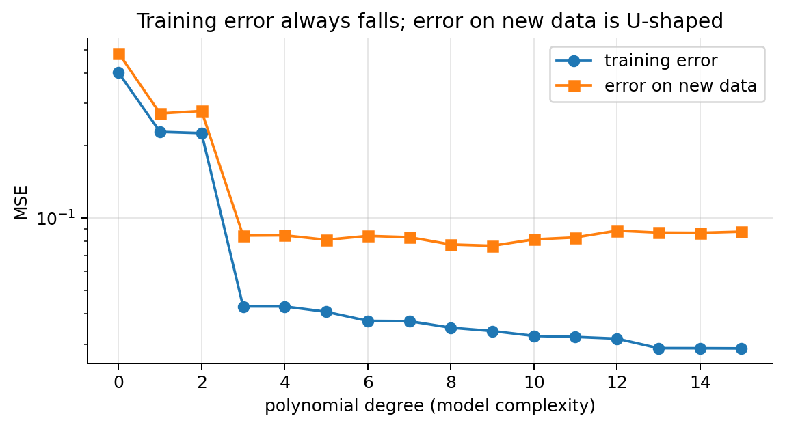
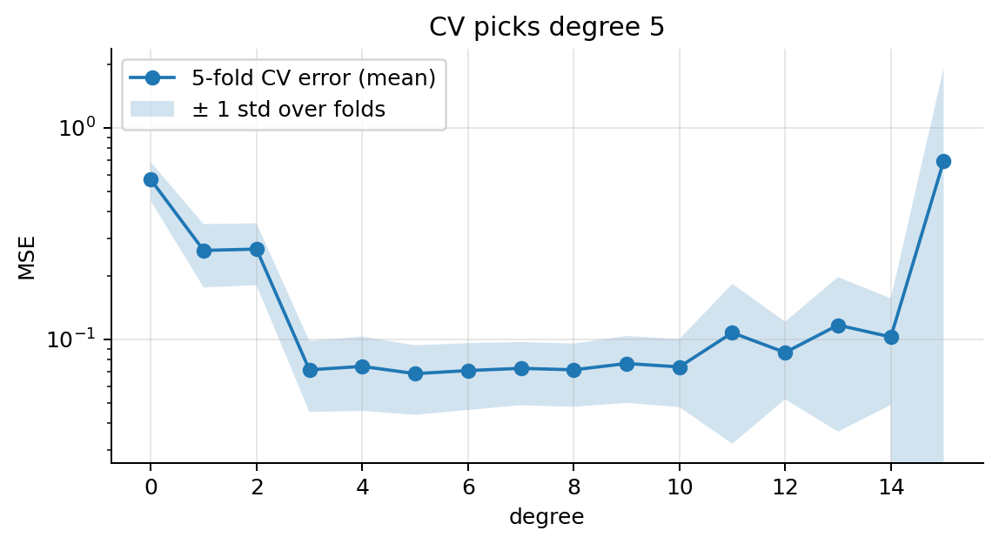
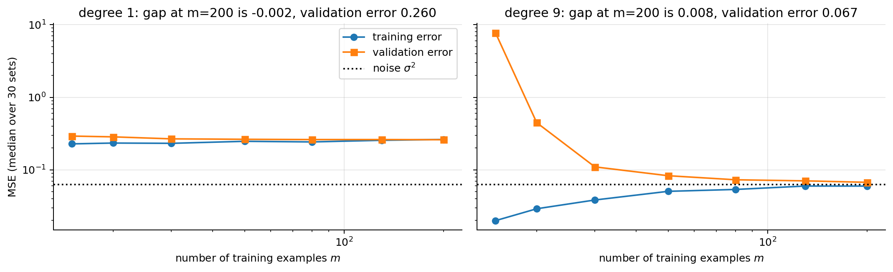
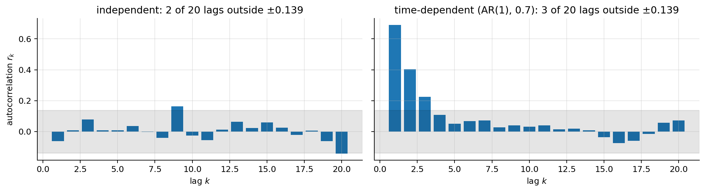
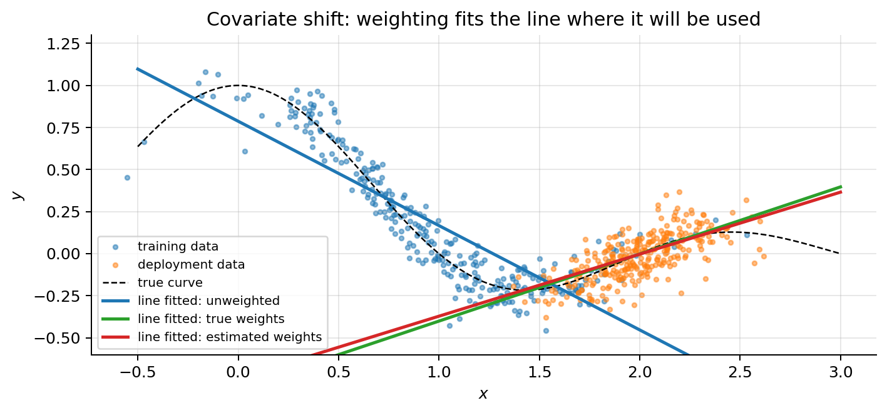
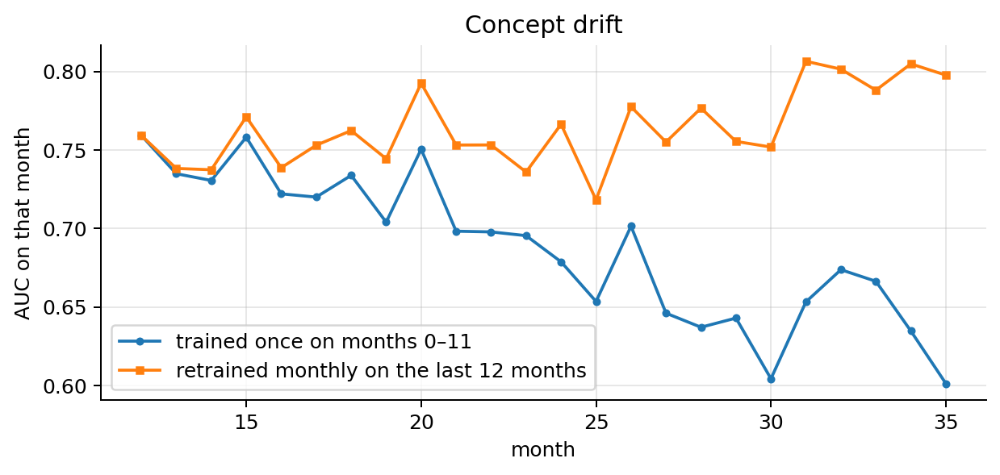
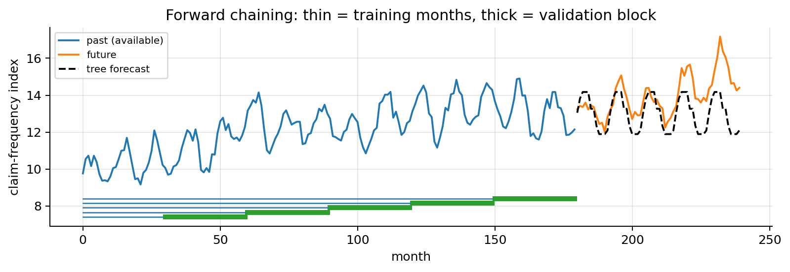

import numpy as np
import matplotlib.pyplot as plt
from scipy import stats
plt.rcParams.update({"figure.dpi": 90, "axes.grid": True, "grid.alpha": 0.3,
"axes.spines.top": False, "axes.spines.right": False})
rng = np.random.default_rng(0)00 · Supervised Learning, Data Splits and Cross-Validation
This note sets up the language used in every other note: what a supervised learning problem is, what “training” means, and, above all, how we measure whether a model will work on data it has never seen. Most failures of machine learning projects are not caused by a bad algorithm but by a bad evaluation: a split that leaks information, a validation score that was selected as the best of fifty, a test set too small to separate two models, or production data that no longer look like the training data.
What you need. Basic probability: expectation \(\mathbb{E}\), variance, independence, the normal distribution and the binomial distribution. No machine learning is assumed; the models used in the examples (polynomial regression, logistic regression, decision trees, nearest neighbours) are described in one line where they appear and studied in the later notes.
After this note you will be able to
- write down the risk, the empirical risk and the bias–variance decomposition, and explain why the training error is always optimistic;
- split data into training, validation and test sets, run \(K\)-fold cross-validation, and choose the split that matches how the model will be used (stratified, grouped, by time);
- put a confidence interval on a test metric, size a test set, and decide whether two models really differ;
- separate hyperparameter selection from model assessment with nested cross-validation;
- state the assumptions that make an evaluation valid (independent examples from one distribution, deployment data from that same distribution, no leakage), check them with code, and know what to do when they fail (covariate shift, label shift, concept drift).
1. The supervised learning problem
We observe pairs \((\mathbf{x}, y)\) drawn from an unknown distribution \(P(\mathbf{x}, y)\):
- \(\mathbf{x}\) are the input variables (features, predictors, covariates), taking values in an input space \(\mathcal{X}\) (usually \(\mathbb{R}^n\)).
- \(y\) is the target (label, response), taking values in an output space \(\mathcal{Y}\).
We want a function \(h:\mathcal{X}\to\mathcal{Y}\) (the hypothesis or model) such that \(h(\mathbf{x}) \approx y\) on new pairs from the same distribution. A learning algorithm takes the training set and returns \(h\):
It is supervised because the training data contains the correct answer \(y\) for every \(\mathbf{x}\). Two big families:
| Task | Target \(y\) | Insurance examples | Models in these notes |
|---|---|---|---|
| Regression | real number, \(y \in \mathbb{R}\) | cost of a claim, a premium, repair hours | linear regression, regression trees |
| Classification | a class, \(y \in \{0,1\}\) or \(\{1,\dots,K\}\) | fraud or not, type of damage | logistic, softmax, SVM, classification trees |
A model family is chosen first (e.g. “all linear functions”), and it is described by parameters \(\boldsymbol{\theta}\). Learning means choosing the \(\boldsymbol{\theta}\) that makes the model good on the data. We write the model as \(h_{\boldsymbol{\theta}}(\mathbf{x})\).
2. Notation used in all the notes
| Symbol | Meaning |
|---|---|
| \(m\) | number of training examples |
| \(n\) | number of input variables (features) |
| \(\mathbf{x}^{(i)} \in \mathbb{R}^{n}\) | the \(i\)-th input vector; \(x^{(i)}_j\) is its \(j\)-th feature |
| \(y^{(i)}\) | the \(i\)-th target; \((\mathbf{x}^{(i)}, y^{(i)})\) is the \(i\)-th training pair |
| \(\mathcal{D} = \{(\mathbf{x}^{(i)},y^{(i)})\}_{i=1}^{m}\) | the training set |
| \(\boldsymbol{\theta}\) | parameter vector; \(\theta_0\) is the intercept (bias) |
| \(h_{\boldsymbol{\theta}}(\mathbf{x})\) | model prediction; also written \(\hat{y}\) |
| \(\mathbf{X} \in \mathbb{R}^{m \times (n+1)}\) | design matrix: one row per example, first column all ones |
| \(\mathbf{y} \in \mathbb{R}^{m}\) | vector of all targets |
| \(\ell(\hat y, y)\) | loss of one prediction |
| \(J(\boldsymbol{\theta})\) | loss (cost) function we minimise: the average \(\ell\) on the training set |
| \(R(h)\) | risk: the expected loss on new data |
| \(\alpha\) | learning rate of gradient descent |
| \(\lambda\) | regularisation strength |
| \(K\) | number of folds in cross-validation (in the classification notes, also the number of classes) |
The trick of adding \(x_0 = 1\) to every example lets us write the intercept inside the dot product:
\[ \boldsymbol{\theta}^\top \mathbf{x} = \theta_0 \cdot 1 + \theta_1 x_1 + \dots + \theta_n x_n , \qquad \mathbf{X} = \begin{bmatrix} 1 & x^{(1)}_1 & \cdots & x^{(1)}_n \\ 1 & x^{(2)}_1 & \cdots & x^{(2)}_n \\ \vdots & \vdots & \ddots & \vdots \\ 1 & x^{(m)}_1 & \cdots & x^{(m)}_n \end{bmatrix} \]
so that the vector of all predictions is simply \(\mathbf{X}\boldsymbol{\theta}\).
3. The machine learning workflow
A project is more than “fit a model”. The eight steps below are the ones every later note assumes:
- Define the problem and the metric first. What counts as “good”? Euros of error, frauds caught, false alarms per week? The metric is chosen before training, from the business question (regression metrics in note 01, classification metrics in note 02).
- Get the data and explore it. Look at distributions, missing values, duplicates, how rows relate to each other (one row per claim? several per policy?) and when each column becomes known.
- Split into training, validation and test data (sections 6, 7 and 12). The split must imitate how the model will be used.
- Baseline. The dumbest model: predict the mean (regression) or the most frequent class (classification). Yours must beat it. With 5 % fraud, “never fraud” is already 95 % accurate (section 8).
- Train: fit \(\boldsymbol{\theta}\) on the training set.
- Tune the hyperparameters on the validation set or by cross-validation. Steps 5–6 iterate: new features, other models.
- Test once, at the very end. Every decision is made with the training and validation data; the test set only gives the final number.
- Deploy and monitor. New data can drift away from the training data: re-check and retrain (section 13.3).
4. Loss, risk and empirical risk
A per-example loss \(\ell(\hat{y}, y)\) measures how bad one prediction is. Two examples: the squared error \(\ell = (\hat{y}-y)^2\), and the 0–1 loss \(\ell = \mathbb{1}[\hat y \ne y]\), which is 1 if the class is wrong and 0 otherwise (\(\mathbb{1}[\cdot]\) is 1 when the condition inside holds and 0 otherwise).
What we really care about is the expected loss on new data, the risk:
\[ R(h) = \mathbb{E}_{(\mathbf{x},y)\sim P}\big[\ell(h(\mathbf{x}), y)\big]. \]
We cannot compute it, because \(P\) is unknown. What we can compute is the average loss on the training set, the empirical risk, which is what we call the loss function \(J\):
\[ J(\boldsymbol{\theta}) = \frac{1}{m}\sum_{i=1}^{m} \ell\big(h_{\boldsymbol{\theta}}(\mathbf{x}^{(i)}), y^{(i)}\big). \]
Training = minimising \(J\). The whole problem of machine learning is that a small \(J\) on training data does not guarantee a small \(R\) on new data. The rest of this note is about how to detect and control that gap.
4.1 Why the training error is optimistic
Let \(\hat{\boldsymbol{\theta}}\) be the minimiser of \(J\) (it depends on the random training set \(\mathcal{D}\)), and let \(\boldsymbol{\theta}^\star\) be the best parameter of the family for the risk, \(\boldsymbol{\theta}^\star = \arg\min_{\boldsymbol{\theta}} R(h_{\boldsymbol{\theta}})\). \(\boldsymbol{\theta}^\star\) is a fixed (unknown) vector: it does not depend on \(\mathcal{D}\).
Claim. \(\mathbb{E}_{\mathcal{D}}\big[J(\hat{\boldsymbol{\theta}})\big] \;\le\; R(h_{\boldsymbol{\theta}^\star}) \;\le\; \mathbb{E}_{\mathcal{D}}\big[R(h_{\hat{\boldsymbol{\theta}}})\big]\): on average, the training error is below the best achievable risk, which is below the risk of the model we actually fitted.
Proof.
\[ \begin{aligned} J(\hat{\boldsymbol{\theta}}) &\le J(\boldsymbol{\theta}^\star) && \text{$\hat{\boldsymbol{\theta}}$ minimises $J$, so it beats any other $\boldsymbol{\theta}$ on the training set}\\ \mathbb{E}_{\mathcal{D}}\big[J(\hat{\boldsymbol{\theta}})\big] &\le \mathbb{E}_{\mathcal{D}}\big[J(\boldsymbol{\theta}^\star)\big] && \text{take expectations of both sides}\\ \mathbb{E}_{\mathcal{D}}\big[J(\boldsymbol{\theta}^\star)\big] &= \frac1m\sum_{i=1}^m \mathbb{E}\big[\ell(h_{\boldsymbol{\theta}^\star}(\mathbf{x}^{(i)}),y^{(i)})\big] = R(h_{\boldsymbol{\theta}^\star}) && \text{$\boldsymbol{\theta}^\star$ is fixed and each pair is drawn from $P$}\\ R(h_{\boldsymbol{\theta}^\star}) &\le R(h_{\hat{\boldsymbol{\theta}}}) \ \text{ for every } \mathcal{D} && \text{$\boldsymbol{\theta}^\star$ minimises $R$}\\ R(h_{\boldsymbol{\theta}^\star}) &\le \mathbb{E}_{\mathcal{D}}\big[R(h_{\hat{\boldsymbol{\theta}}})\big] && \text{take expectations} \qquad\blacksquare \end{aligned} \]
The third line is the key: an average of losses is an unbiased estimate of the risk only if the model was chosen without looking at those examples. \(\hat{\boldsymbol{\theta}}\) was chosen by looking at them, so the training error is biased downwards.
4.2 Why a held-out error is honest
Now take a model \(h\) that is already fixed, and \(m_{\text{test}}\) new pairs \((\mathbf{x}^{(i)},y^{(i)})\) that played no part in choosing \(h\). Their average loss is the test error \(\hat R_{\text{test}}(h)=\frac{1}{m_{\text{test}}}\sum_i \ell(h(\mathbf{x}^{(i)}),y^{(i)})\). If the pairs are drawn independently from the same \(P\):
\[ \begin{aligned} \mathbb{E}\big[\hat R_{\text{test}}(h)\big] &= \frac{1}{m_{\text{test}}}\sum_{i=1}^{m_{\text{test}}}\mathbb{E}\big[\ell(h(\mathbf{x}^{(i)}),y^{(i)})\big] && \text{linearity of expectation}\\ &= \frac{1}{m_{\text{test}}}\cdot m_{\text{test}}\cdot R(h) = R(h) && \text{each pair has distribution $P$ and $h$ does not depend on it}\\ \mathrm{Var}\big[\hat R_{\text{test}}(h)\big] &= \frac{1}{m_{\text{test}}^2}\sum_{i=1}^{m_{\text{test}}}\mathrm{Var}\big[\ell(h(\mathbf{x}^{(i)}),y^{(i)})\big] && \text{independent terms: variances add}\\ &= \frac{\sigma_\ell^2}{m_{\text{test}}} && \sigma_\ell^2 = \text{variance of the loss of one example} \end{aligned} \]
So the test error is unbiased and its standard deviation shrinks like \(1/\sqrt{m_{\text{test}}}\). Three assumptions were used, and they are the subject of section 13: the pairs are independent, they come from the same distribution \(P\) as the data the model will meet in use, and \(h\) did not depend on them. Every splitting rule of this note exists to protect one of the three.
5. Underfitting, overfitting, bias and variance
- Underfitting: the model family is too simple to represent the pattern. Error is high on training and new data.
- Overfitting: the model is flexible enough to memorise the noise of the training set. Training error is low, error on new data is high.
Try it. 20 noisy points from the dashed curve \(\sin(2\pi x)\) (noise standard deviation \(\sigma = 0.3\)). Move the degree of the fitted polynomial and watch the training and test RMSE (root mean squared error, on 300 new points). Degree 1 underfits (train RMSE 0.500, test 0.548); degree 3 gives the lowest test RMSE of all degrees (0.346, close to the noise level 0.3); after that the training error keeps falling while the test error creeps up (0.389 at degree 9), and at degree 15 it explodes to 3.873.
The same experiment in Python, with 30 training points and noise \(\sigma = 0.25\). A polynomial of degree \(d\) is linear regression on the features \(1, x, x^2, \dots, x^d\) (note 01); poly_fit solves the least-squares problem.
f_true = lambda x: np.sin(2 * np.pi * x)
x_tr = np.sort(rng.uniform(0, 1, 30)); y_tr = f_true(x_tr) + rng.normal(0, 0.25, 30)
x_te = np.sort(rng.uniform(0, 1, 200)); y_te = f_true(x_te) + rng.normal(0, 0.25, 200)
def poly_fit(x, y, d):
Phi = np.vander(x, d + 1, increasing=True)
return np.linalg.lstsq(Phi, y, rcond=None)[0]
def poly_pred(theta, x):
return np.vander(x, len(theta), increasing=True) @ theta
grid = np.linspace(0, 1, 300)
fig, axes = plt.subplots(1, 3, figsize=(13, 3.6), sharey=True)
for ax, d, title in zip(axes, [1, 4, 15], ["degree 1: underfit", "degree 4: good", "degree 15: overfit"]):
th = poly_fit(x_tr, y_tr, d)
ax.scatter(x_tr, y_tr, s=18, color="k", label="train")
ax.plot(grid, f_true(grid), "g--", lw=1, label="true $f$")
ax.plot(grid, poly_pred(th, grid), "C0", lw=2, label="model")
ax.set_ylim(-2, 2); ax.set_title(title); ax.set_xlabel("$x$")
axes[0].set_ylabel("$y$"); axes[0].legend(loc="lower left")
plt.tight_layout(); plt.show()
degrees = range(0, 16)
tr_err, te_err = [], []
for d in degrees:
th = poly_fit(x_tr, y_tr, d)
tr_err.append(np.mean((poly_pred(th, x_tr) - y_tr) ** 2))
te_err.append(np.mean((poly_pred(th, x_te) - y_te) ** 2))
plt.figure(figsize=(6.5, 3.6))
plt.plot(degrees, tr_err, "o-", label="training error")
plt.plot(degrees, te_err, "s-", label="error on new data")
plt.yscale("log"); plt.xlabel("polynomial degree (model complexity)"); plt.ylabel("MSE")
plt.title("Training error always falls; error on new data is U-shaped")
plt.legend(); plt.tight_layout(); plt.show()
The training error only goes down as the degree grows (each family contains the previous one, so the least-squares minimum cannot increase), so it cannot be used to choose the complexity: we need data the model has not seen. The degree is a hyperparameter: a choice made before training. Parameters \(\boldsymbol{\theta}\) are learned on the training set; hyperparameters are chosen on the validation set (section 6).
5.1 Bias–variance decomposition (for squared error)
Assume \(y = f(\mathbf{x}) + \varepsilon\) with \(\mathbb{E}[\varepsilon]=0\), \(\mathrm{Var}(\varepsilon)=\sigma^2\), and \(\varepsilon\) independent of everything else. Train the model on a random training set \(\mathcal{D}\); call the fitted function \(\hat f\) (it is random because \(\mathcal{D}\) is). Fix a point \(\mathbf{x}\), let \(y\) be a new target at that point, and write \(\bar f = \mathbb{E}_{\mathcal{D}}[\hat f(\mathbf{x})]\), the average prediction over all possible training sets.
Claim. \[ \mathbb{E}\big[(y-\hat f(\mathbf{x}))^2\big] = \underbrace{\big(f(\mathbf{x})-\bar f\big)^2}_{\text{bias}^2} + \underbrace{\mathbb{E}\big[(\hat f(\mathbf{x})-\bar f)^2\big]}_{\text{variance}} + \underbrace{\sigma^2}_{\text{noise}}, \] where the expectation is over both the training set \(\mathcal{D}\) and the new noise \(\varepsilon\).
Proof. Write \(a = y - f(\mathbf{x}) = \varepsilon\), \(b = f(\mathbf{x}) - \bar f\) and \(c = \bar f - \hat f(\mathbf{x})\).
\[ \begin{aligned} y - \hat f &= (y - f) + (f - \bar f) + (\bar f - \hat f) = a + b + c && \text{add and subtract $f$ and $\bar f$}\\ (y - \hat f)^2 &= a^2 + b^2 + c^2 + 2ab + 2ac + 2bc && \text{square of a sum of three terms}\\ \mathbb{E}[ab] &= b\,\mathbb{E}[\varepsilon] = 0 && \text{$b$ is a constant and $\mathbb{E}[\varepsilon]=0$}\\ \mathbb{E}[ac] &= \mathbb{E}[\varepsilon]\,\mathbb{E}[c] = 0 && \text{the new noise is independent of $\mathcal{D}$, hence of $\hat f$}\\ \mathbb{E}[bc] &= b\,\big(\bar f - \mathbb{E}[\hat f]\big) = b\,(\bar f - \bar f) = 0 && \text{definition of $\bar f$}\\ \mathbb{E}\big[(y - \hat f)^2\big] &= \mathbb{E}[\varepsilon^2] + b^2 + \mathbb{E}[c^2] = \sigma^2 + \big(f - \bar f\big)^2 + \mathbb{E}\big[(\hat f - \bar f)^2\big] && \text{only the squares survive} \qquad\blacksquare \end{aligned} \]
- Bias²: how far the average model is from the truth. Large for families that are too simple (degree 1 above).
- Variance: how much the fitted model changes from one training set to another. Large for flexible families (degree 15 above).
- Noise \(\sigma^2\): cannot be removed by any model. It is the floor of the test error.
5.2 Checking the decomposition by simulation
The three terms are expectations over training sets, so we can estimate them by drawing many training sets of \(m = 30\) points from the same \(P\) (the sine curve with \(\sigma = 0.25\)), fitting a polynomial to each, and looking at the spread of the predictions at 50 points \(x_0 \in [0,1]\). The last column is a direct simulation of \(\mathbb{E}[(y-\hat f)^2]\) with fresh targets; it should match the sum.
rs = np.random.default_rng(1)
x0 = np.linspace(0, 1, 50) # points where the fitted curves are compared
sigma, n_sets = 0.25, 500 # noise sd, number of training sets
bv = {}
for d in [1, 3, 5, 7, 9]:
P = np.empty((n_sets, len(x0))) # row r = predictions of the model fitted on training set r
for r in range(n_sets):
x = rs.uniform(0, 1, 30); y = f_true(x) + rs.normal(0, sigma, 30)
P[r] = poly_pred(poly_fit(x, y, d), x0)
f_bar = P.mean(axis=0) # average prediction over training sets
bias2 = np.mean((f_true(x0) - f_bar) ** 2) # averaged over the 50 points x0
var = np.mean(P.var(axis=0))
y_new = f_true(x0) + rs.normal(0, sigma, P.shape) # a fresh target for every model and point
bv[d] = (bias2, var, np.mean((y_new - P) ** 2))
print(f"degree {d}: bias² {bias2:.4f} + variance {var:.4f} + noise {sigma**2:.4f} "
f"= {bias2 + var + sigma**2:.4f} simulated test MSE {bv[d][2]:.4f}")
d_best = min(bv, key=lambda d: bv[d][0] + bv[d][1])
print(f"smallest error at degree {d_best}: {bv[d_best][0] + bv[d_best][1]:.4f} above the noise floor {sigma**2:.4f}")degree 1: bias² 0.2129 + variance 0.0209 + noise 0.0625 = 0.2963 simulated test MSE 0.2959
degree 3: bias² 0.0061 + variance 0.0126 + noise 0.0625 = 0.0813 simulated test MSE 0.0810
degree 5: bias² 0.0001 + variance 0.0617 + noise 0.0625 = 0.1244 simulated test MSE 0.1241
degree 7: bias² 0.0005 + variance 0.6686 + noise 0.0625 = 0.7316 simulated test MSE 0.7320
degree 9: bias² 0.0035 + variance 5.6598 + noise 0.0625 = 5.7258 simulated test MSE 5.7348
smallest error at degree 3: 0.0188 above the noise floor 0.0625The sum and the direct simulation agree up to the Monte Carlo noise of the simulation, as the proof says they must. Bias² collapses between degree 1 and degree 3 (a cubic can already follow one period of a sine), while the variance grows with the degree: it is already the largest term at degree 5 and explodes at degrees 7 and 9, mostly near the ends of the interval, where a high-degree polynomial is least constrained by data. The best degree is where the sum is smallest.
Every technique in these notes that “controls complexity” (regularisation in note 03, tree depth in note 06, \(C\) in SVMs in note 05, averaging trees in a forest in note 07) is a way of moving along this trade-off.
6. Train / validation / test split
Because training error is optimistic (section 4.1), we must estimate performance on data the model did not see (section 4.2). The standard protocol splits the data once, at random, into three disjoint parts:
| Set | Typical size | Used for |
|---|---|---|
| Training | 60–80 % | fitting the parameters \(\boldsymbol{\theta}\) (minimising \(J\)) |
| Validation | 10–20 % | choosing hyperparameters (degree, \(\lambda\), tree depth, \(C\), …) and comparing models |
| Test | 10–20 % | one final, unbiased estimate of performance, on data never used before. Touched once, at the end. |
Parameters vs. hyperparameters. Parameters (\(\boldsymbol{\theta}\)) are learned by minimising \(J\) on the training set. Hyperparameters are choices made before training that \(J\) cannot choose for you (minimising training error would always pick the most complex model, as the plot above shows). They are chosen by validation error.
Why a separate test set? If you pick the hyperparameter with the best validation score, that score is itself optimistically biased: you selected the winner of a contest on that very data (section 11 measures how much). The test set is an independent referee. If you change the model after looking at the test score, the test set has become a validation set.
What proportions? They depend on the number of examples and of hyperparameters: (70-15-15), (70-20-10), (80-10-10), (90-7-3) are all common. What matters is the absolute size of the validation and test sets, because the precision of a metric depends on \(m_{\text{test}}\), not on the percentage (section 10): with millions of rows, 1 % is plenty for validation and test; with a few hundred, use cross-validation (section 7). The three parts must come from the same distribution and share no information (sections 12–14).
from sklearn.model_selection import train_test_split
x_all = rng.uniform(0, 1, 150); y_all = f_true(x_all) + rng.normal(0, 0.25, 150)
# 60 / 20 / 20: first cut off the test set, then split the rest
x_rest, x_test, y_rest, y_test = train_test_split(x_all, y_all, test_size=0.20, random_state=0)
x_train, x_val, y_train, y_val = train_test_split(x_rest, y_rest, test_size=0.25, random_state=0)
print(f"train={len(x_train)}, val={len(x_val)}, test={len(x_test)}")
val_err = []
for d in degrees:
th = poly_fit(x_train, y_train, d)
val_err.append(np.mean((poly_pred(th, x_val) - y_val) ** 2))
best_d = int(np.argmin(val_err))
# refit on train+val with the chosen hyperparameter, report on test once
th = poly_fit(np.r_[x_train, x_val], np.r_[y_train, y_val], best_d)
print(f"best degree on validation = {best_d}")
print(f"test MSE (reported once) = {np.mean((poly_pred(th, x_test) - y_test)**2):.3f} (noise variance = {0.25**2:.3f})")train=90, val=30, test=30
best degree on validation = 6
test MSE (reported once) = 0.056 (noise variance = 0.062)7. \(K\)-fold cross-validation
A single validation split is noisy: with few data, the score depends heavily on which points landed in the validation set. It also “wastes” data that could be used for training.
\(K\)-fold cross-validation (on the train+validation data; the test set stays aside):
- Shuffle and split the data into \(K\) folds of (almost) equal size \(F_1,\dots,F_K\).
- For \(k = 1,\dots,K\): train on all folds except \(F_k\), compute the error \(E_k\) on \(F_k\).
- The CV estimate is the average \[ \mathrm{CV} = \frac{1}{K}\sum_{k=1}^K E_k , \] reported together with the spread (standard deviation) of the \(E_k\).
Every example is used for validation exactly once and for training \(K-1\) times.
- \(K=5\) or \(K=10\) are the usual choices. Cost: \(K\) trainings per hyperparameter value.
- What CV estimates. Each of the \(K\) models is trained on a fraction \((K-1)/K\) of the data, so CV estimates the risk of the procedure trained on slightly fewer examples than the final model will see. Since more data usually means a better model, CV is slightly pessimistic, less so for larger \(K\).
- \(K=m\) is leave-one-out (LOOCV): each model is trained on \(m-1\) points, so it is nearly unbiased, but it costs \(m\) fits, and because the \(m\) training sets are almost identical, its estimate can have a larger variance than 10-fold CV.
- After choosing the hyperparameter by CV, refit on all the non-test data, then evaluate once on the test set.
from matplotlib.patches import Rectangle
k = 5
fig, ax = plt.subplots(figsize=(8, 2.6))
for r in range(k):
for f in range(k):
ax.add_patch(Rectangle((f, k - 1 - r), 0.95, 0.8, color="C1" if f == r else "C0", alpha=0.85))
ax.text(k + 0.1, k - 1 - r + 0.4, f"split {r+1}: $E_{r+1}$", va="center")
ax.set_xlim(0, k + 1.3); ax.set_ylim(-0.2, k); ax.axis("off")
ax.set_title("5-fold CV (blue = train, orange = validation)")
plt.tight_layout(); plt.show()
from sklearn.model_selection import KFold
X_rest = x_rest # train + validation data (test still untouched)
kf = KFold(n_splits=5, shuffle=True, random_state=0)
cv_mean, cv_std = [], []
for d in degrees:
errs = []
for tr_idx, va_idx in kf.split(X_rest):
th = poly_fit(X_rest[tr_idx], y_rest[tr_idx], d)
errs.append(np.mean((poly_pred(th, X_rest[va_idx]) - y_rest[va_idx]) ** 2))
cv_mean.append(np.mean(errs)); cv_std.append(np.std(errs))
cv_mean, cv_std = np.array(cv_mean), np.array(cv_std)
plt.figure(figsize=(6.5, 3.6))
plt.plot(degrees, cv_mean, "o-", label="5-fold CV error (mean)")
plt.fill_between(degrees, cv_mean - cv_std, cv_mean + cv_std, alpha=0.2, label="± 1 std over folds")
plt.yscale("log"); plt.xlabel("degree"); plt.ylabel("MSE"); plt.legend()
plt.title(f"CV picks degree {int(np.argmin(cv_mean))}")
plt.tight_layout(); plt.show()
This curve, the validation error against a hyperparameter, is called a validation curve (section 9).
8. Baselines and stratified splits
8.1 Always compare with a trivial model
A score means nothing without a reference. The baseline is the best model that ignores \(\mathbf{x}\):
- regression: predict the training mean \(\bar y\) for everybody. Its MSE is the variance of \(y\), which is why \(R^2 = 1 - \mathrm{MSE}/\mathrm{Var}(y)\) compares a model with it (note 01);
- classification: predict the most frequent class. Its accuracy is the proportion of that class.
With rare events the baseline is deceptively strong. A made-up portfolio of 4,000 claims with about 5–6 % frauds:
from sklearn.datasets import make_classification
from sklearn.dummy import DummyClassifier
from sklearn.linear_model import LogisticRegression
Xf, yf = make_classification(n_samples=4000, n_features=6, n_informative=3, weights=[0.95],
flip_y=0.02, random_state=1)
Xf_tr, Xf_te, yf_tr, yf_te = train_test_split(Xf, yf, test_size=0.25, stratify=yf, random_state=0)
print(f"fraud rate in the test set: {yf_te.mean():.3f}")
for name, model in [("baseline 'never fraud'", DummyClassifier(strategy="most_frequent")),
("logistic regression", LogisticRegression())]:
pred = model.fit(Xf_tr, yf_tr).predict(Xf_te)
print(f"{name:24s} accuracy {np.mean(pred == yf_te):.3f} frauds caught (recall) {np.mean(pred[yf_te == 1] == 1):.3f}")fraud rate in the test set: 0.057
baseline 'never fraud' accuracy 0.943 frauds caught (recall) 0.000
logistic regression accuracy 0.961 frauds caught (recall) 0.333The trivial model has about 94 % accuracy and catches no fraud at all; the logistic regression gains less than 2 points of accuracy but catches a third of the frauds. A model must be judged by how much it improves on the baseline, in a metric that reflects the goal (here recall, precision or AUC rather than accuracy; see note 02). If a sophisticated model barely beats the baseline, the features may carry little signal; if it beats it by an implausible margin, suspect leakage (section 14.1).
8.2 Stratified splits for classification
A random split keeps the class proportions only on average. With a rare class, one fold can receive very few positives, or none, and then recall or AUC on that fold is meaningless or undefined. Stratified splitting (stratify=y in train_test_split, StratifiedKFold) splits each class separately so every part keeps the class proportions.
How likely is an empty fold? Take \(m = 200\) examples with 10 positives and \(K = 5\) folds of 40. The number of positives in one fold drawn at random without replacement follows a hypergeometric distribution, so
\[ P(\text{no positive in the fold}) = \frac{\binom{190}{40}}{\binom{200}{40}} = \prod_{i=0}^{9}\frac{160 - i}{200 - i}, \]
(choose all 40 fold members among the 190 negatives; the product form follows by cancelling the factorials).
from sklearn.model_selection import StratifiedKFold
y_rare = np.r_[np.ones(10), np.zeros(190)].astype(int)
p0 = np.prod([(160 - i) / (200 - i) for i in range(10)])
print(f"P(fold without positives) = {p0:.3f} (scipy: {stats.hypergeom.pmf(0, 200, 10, 40):.3f})")
print("positives per fold, KFold :", [int(y_rare[v].sum()) for _, v in KFold(5, shuffle=True, random_state=0).split(y_rare)])
print("positives per fold, StratifiedKFold:", [int(y_rare[v].sum()) for _, v in StratifiedKFold(5, shuffle=True, random_state=0).split(y_rare, y_rare)])
counts = np.array([int(y_rare[v].sum()) for s in range(1000) for _, v in KFold(5, shuffle=True, random_state=s).split(y_rare)])
print(f"over 1000 random KFold splits: {np.mean(counts == 0):.3f} of the folds have no positive; "
f"positives per fold range from {counts.min()} to {counts.max()}")P(fold without positives) = 0.101 (scipy: 0.101)
positives per fold, KFold : [3, 1, 2, 3, 1]
positives per fold, StratifiedKFold: [2, 2, 2, 2, 2]
over 1000 random KFold splits: 0.095 of the folds have no positive; positives per fold range from 0 to 7About one fold in ten has no fraud at all, and some folds receive up to 7 of the 10 positives; stratification gives exactly 2 per fold. Stratify every classification split; it costs nothing. For regression with a skewed target (claim costs), the same idea works by stratifying on quantile bins of \(y\).
9. Learning curves and validation curves
Two plots answer “what should I do next?”:
- a validation curve: training and validation error against a hyperparameter (complexity), at fixed data size (the CV plot of section 7);
- a learning curve: training and validation error against the number of training examples, at fixed complexity.
What to expect on a learning curve, as \(m\) grows: the training error increases (it is harder to fit more points exactly) and the validation error decreases (the model is estimated better); both approach the same limit, the risk of the best model of the family, which is bias² + noise. The code draws the curves for a model that is too simple (degree 1) and one that is too flexible (degree 9), averaging over 30 random training sets per size and measuring the error on 2,000 fresh points.
rl = np.random.default_rng(3)
sizes = [15, 20, 30, 50, 80, 130, 200]
x_big = rl.uniform(0, 1, 2000); y_big = f_true(x_big) + rl.normal(0, 0.25, 2000)
fig, axes = plt.subplots(1, 2, figsize=(12, 3.8), sharey=True)
for ax, d in zip(axes, [1, 9]):
tr, va = [], []
for m_ in sizes:
a, b = [], []
for r in range(30):
x = rl.uniform(0, 1, m_); y = f_true(x) + rl.normal(0, 0.25, m_)
th = poly_fit(x, y, d)
a.append(np.mean((poly_pred(th, x) - y) ** 2)); b.append(np.mean((poly_pred(th, x_big) - y_big) ** 2))
tr.append(np.median(a)); va.append(np.median(b))
ax.plot(sizes, tr, "o-", label="training error"); ax.plot(sizes, va, "s-", label="validation error")
ax.axhline(0.25**2, color="k", ls=":", label="noise $\\sigma^2$")
ax.set_xscale("log"); ax.set_yscale("log"); ax.set_xlabel("number of training examples $m$")
ax.set_title(f"degree {d}: gap at m=200 is {va[-1] - tr[-1]:.3f}, validation error {va[-1]:.3f}")
print(f"degree {d}: m = {sizes[0]}: train {tr[0]:.3f}, val {va[0]:.3f} | m = {sizes[-1]}: train {tr[-1]:.3f}, val {va[-1]:.3f}")
axes[0].set_ylabel("MSE (median over 30 sets)"); axes[0].legend()
plt.tight_layout(); plt.show()degree 1: m = 15: train 0.228, val 0.292 | m = 200: train 0.262, val 0.260
degree 9: m = 15: train 0.020, val 7.768 | m = 200: train 0.060, val 0.067
How to read them.
| Symptom | Diagnosis | What helps | What does not help |
|---|---|---|---|
| training and validation error both high and close; curves flat | high bias (underfitting), left panel | a more flexible model, better features, less regularisation | more data: the curves have already met |
| training error much lower than validation error; the gap closes slowly with \(m\) | high variance (overfitting), right panel | more data, a simpler model, more regularisation, averaging (ensembles), fewer features | a more flexible model |
| both errors near the level you need | done: stop tuning | ||
| validation error below training error | usually luck with a small validation set, or a validation set easier than the training set (check the split, section 13.2) | a bigger validation set, CV |
On the left, degree 1 has a validation error between 0.26 and 0.29 whatever the size: collecting more data would be wasted money. On the right, degree 9 is hopeless with 15 points but excellent with 200: its problem was variance, and data cures variance. In practice both curves are computed by cross-validation (sklearn.model_selection.learning_curve and validation_curve do exactly this).
10. How precise is a test metric?
A test score is a random number: another test set of the same size would give a different value. Before comparing models or announcing a result we need its standard error.
10.1 The standard error of an accuracy
Let \(Z_i = \mathbb{1}[h(\mathbf{x}^{(i)}) = y^{(i)}]\) be 1 if test example \(i\) is classified correctly. For a fixed model and independent test examples from \(P\), the \(Z_i\) are independent Bernoulli variables with success probability \(p\) = the true accuracy.
\[ \begin{aligned} \widehat{\mathrm{acc}} &= \frac{1}{m_{\text{test}}}\sum_{i=1}^{m_{\text{test}}} Z_i && \text{the test accuracy is an average of 0/1 variables}\\ \mathbb{E}[\widehat{\mathrm{acc}}] &= \frac{1}{m_{\text{test}}}\cdot m_{\text{test}}\, p = p && \mathbb{E}[Z_i] = 1\cdot p + 0\cdot(1-p)\\ \mathrm{Var}(Z_i) &= \mathbb{E}[Z_i^2] - \mathbb{E}[Z_i]^2 = p - p^2 = p(1-p) && Z_i^2 = Z_i \text{ for a 0/1 variable}\\ \mathrm{Var}(\widehat{\mathrm{acc}}) &= \frac{1}{m_{\text{test}}^2}\cdot m_{\text{test}}\,p(1-p) = \frac{p(1-p)}{m_{\text{test}}} && \text{independent terms: variances add; constants come out squared}\\ \mathrm{SE}(\widehat{\mathrm{acc}}) &= \sqrt{\frac{\widehat{\mathrm{acc}}\,(1-\widehat{\mathrm{acc}})}{m_{\text{test}}}} && \text{square root, with the unknown $p$ replaced by its estimate} \end{aligned} \]
(The number of correct predictions, \(m_{\text{test}}\widehat{\mathrm{acc}}\), is Binomial\((m_{\text{test}},p)\).) For large \(m_{\text{test}}\) the central limit theorem makes \(\widehat{\mathrm{acc}}\) approximately normal, which gives the 95 % confidence interval
\[ \boxed{\widehat{\mathrm{acc}} \pm 1.96\,\sqrt{\frac{\widehat{\mathrm{acc}}\,(1-\widehat{\mathrm{acc}})}{m_{\text{test}}}}} \]
(\(1.96\) is the value that a standard normal exceeds in absolute value with probability 0.05).
Worked example. A fraud model is right on 900 of 1,000 test claims: \(\widehat{\mathrm{acc}} = 0.9\), \(\mathrm{SE} = \sqrt{0.9\cdot 0.1/1000} = \sqrt{0.00009} = 0.0095\), and the interval is \(0.9 \pm 1.96\cdot 0.0095 = 0.9 \pm 0.019\), i.e. \([0.881, 0.919]\). A second model with 0.91 accuracy on another test set of 1,000 is not shown to be better. The simulation checks that the interval covers the true accuracy 95 % of the time:
p_true, m_test = 0.9, 1000
se = np.sqrt(p_true * (1 - p_true) / m_test)
print(f"SE = {se:.4f}, 95% CI = [{p_true - 1.96*se:.3f}, {p_true + 1.96*se:.3f}]")
acc_sim = np.random.default_rng(5).binomial(m_test, p_true, 20000) / m_test # 20,000 test sets
half = 1.96 * np.sqrt(acc_sim * (1 - acc_sim) / m_test)
print(f"sd of the accuracy over 20,000 test sets = {acc_sim.std():.4f}; "
f"coverage of the interval = {np.mean(np.abs(acc_sim - p_true) <= half):.3f}")SE = 0.0095, 95% CI = [0.881, 0.919]
sd of the accuracy over 20,000 test sets = 0.0095; coverage of the interval = 0.953The same reasoning applies to any metric that is an average over examples (error rate, MSE, log-loss): \(\mathrm{SE} = s_\ell/\sqrt{m_{\text{test}}}\) with \(s_\ell\) the sample standard deviation of the per-example losses. Metrics that are not simple averages (AUC, F1, precision at a threshold) have no such formula; use the bootstrap: resample the test set with replacement a thousand times, recompute the metric each time, and take the 2.5 % and 97.5 % quantiles. Precision and recall are averages over subsets (the predicted positives, the actual positives), so their \(m_{\text{test}}\) is the size of that subset: 1,000 claims with 50 frauds give a recall with the precision of a sample of 50.
10.2 How large must the test set be?
Solve “half-width \(\le E\)” for \(m_{\text{test}}\):
\[ \begin{aligned} 1.96\sqrt{\frac{p(1-p)}{m_{\text{test}}}} &\le E && \text{the half-width of the interval must not exceed $E$}\\ \frac{p(1-p)}{m_{\text{test}}} &\le \frac{E^2}{1.96^2} && \text{square both sides and divide by $1.96^2$}\\ m_{\text{test}} &\ge \frac{1.96^2\, p(1-p)}{E^2} && \text{multiply by $m_{\text{test}}/(E^2/1.96^2)$} \end{aligned} \]
For an accuracy near 0.9 known to \(\pm 1\) point (\(E = 0.01\)): \(m_{\text{test}} \ge 3.8416\cdot 0.09/0.0001 = 3457.4\), so about 3,460 examples. Since \(p(1-p) \le 1/4\), the worst case (\(p = 0.5\)) needs \(3.8416\cdot 0.25/0.0001 = 9604\). Halving \(E\) multiplies the size by 4.
Zero errors. If a model makes no mistake on \(m_{\text{test}}\) examples, the formula gives \(\mathrm{SE} = 0\), which is absurd. The exact reasoning: if the true error rate is \(q\), the chance of seeing no error is \((1-q)^{m_{\text{test}}}\); the largest \(q\) still compatible with the observation at the 5 % level solves \((1-q)^{m_{\text{test}}} = 0.05\), so \(m_{\text{test}}\ln(1-q) = \ln 0.05 \approx -3\), and with \(\ln(1-q)\approx -q\) for small \(q\), \(q \approx 3/m_{\text{test}}\) (the rule of three). No error on 300 claims only shows that the error rate is probably below 1 %.
10.3 How variable is a cross-validation estimate?
The \(K\) fold errors \(E_k\) are not independent: any two training sets share a fraction \((K-2)/(K-1)\) of their examples. So the naive standard error \(\mathrm{sd}(E_1,\dots,E_K)/\sqrt{K}\) ignores the correlation, and there is no unbiased estimator of the true variance of \(K\)-fold CV (Bengio and Grandvalet, 2004). A simulation shows the size of the problem: 400 datasets of \(m = 40\) points from the sine curve, a cubic polynomial, 5-fold CV on each, compared with the true risk of the model refitted on the whole dataset (estimated on 20,000 fresh points).
rc = np.random.default_rng(6)
x_big = rc.uniform(0, 1, 20000); y_big = f_true(x_big) + rc.normal(0, 0.25, 20000)
cv_est, naive_se, true_risk = [], [], []
for s in range(400):
x = rc.uniform(0, 1, 40); y = f_true(x) + rc.normal(0, 0.25, 40)
E = [np.mean((poly_pred(poly_fit(x[tr], y[tr], 3), x[va]) - y[va]) ** 2)
for tr, va in KFold(5, shuffle=True, random_state=s).split(x)]
cv_est.append(np.mean(E)); naive_se.append(np.std(E, ddof=1) / np.sqrt(5))
true_risk.append(np.mean((poly_pred(poly_fit(x, y, 3), x_big) - y_big) ** 2))
cv_est, true_risk = np.array(cv_est), np.array(true_risk)
print(f"actual sd of the CV estimate over datasets = {cv_est.std():.4f}; average naive SE = {np.mean(naive_se):.4f}")
print(f"mean CV estimate = {cv_est.mean():.4f}; mean true risk = {true_risk.mean():.4f}")
print(f"correlation between the CV estimate and the true risk of the fitted model = {np.corrcoef(cv_est, true_risk)[0, 1]:.3f}")actual sd of the CV estimate over datasets = 0.0193; average naive SE = 0.0161
mean CV estimate = 0.0776; mean true risk = 0.0753
correlation between the CV estimate and the true risk of the fitted model = -0.019Three lessons, all visible in the output:
- The naive standard error is too small: report it, but read it as a lower bound.
- On average CV is right (slightly pessimistic, because each fold model uses 32 of the 40 points).
- The correlation between the CV estimate and the risk of this particular fitted model is essentially zero. CV estimates how well the procedure works on datasets like this one, not how good the specific model you got is (Bates, Hastie and Tibshirani, 2023). With small \(m\), only a large, untouched test set tells you about the model you will deploy.
Repeated CV (run \(K\)-fold with several shuffles and average, RepeatedKFold) removes the part of the variance due to the random assignment to folds, but not the part due to the dataset itself, which is usually the larger one.
10.4 Is model A really better than model B?
Compare the two models on the same test examples. Let \(a_i, b_i \in\{0,1\}\) say whether A and B are right on example \(i\) and \(d_i = a_i - b_i\). Then
\[ \begin{aligned} \widehat{\mathrm{acc}}_A - \widehat{\mathrm{acc}}_B &= \frac{1}{m_{\text{test}}}\sum_i d_i = \bar d && \text{difference of two averages = average of differences}\\ \mathrm{Var}(\bar d) &= \frac{\mathrm{Var}(a_i - b_i)}{m_{\text{test}}} = \frac{\mathrm{Var}(a_i) + \mathrm{Var}(b_i) - 2\,\mathrm{Cov}(a_i,b_i)}{m_{\text{test}}} && \text{variance of a difference} \end{aligned} \]
Two reasonable models are right and wrong on largely the same examples, so \(\mathrm{Cov}(a_i,b_i) > 0\) and the paired variance is much smaller than the unpaired \(\big(\mathrm{Var}(a_i)+\mathrm{Var}(b_i)\big)/m_{\text{test}}\) that treats the two accuracies as independent. The paired standard error is simply the sample standard deviation of the \(d_i\) divided by \(\sqrt{m_{\text{test}}}\).
McNemar’s test (in words): only the examples where the models disagree carry information about which is better. Let \(b\) = number of examples A gets right and B wrong, \(c\) = the reverse. If the two models had the same accuracy, each disagreement would be equally likely to go either way, so \(b\) would be Binomial\((b+c, 1/2)\); the test asks whether the observed split is too lopsided for that. The usual large-sample version compares \((|b-c|-1)^2/(b+c)\) with a \(\chi^2_1\) distribution; with few disagreements use the exact binomial test.
from sklearn.tree import DecisionTreeClassifier
Xc, yc = make_classification(n_samples=3000, n_features=10, n_informative=5, flip_y=0.1, random_state=0)
Xc_tr, Xc_te, yc_tr, yc_te = train_test_split(Xc, yc, test_size=1000, stratify=yc, random_state=0)
a = LogisticRegression().fit(Xc_tr, yc_tr).predict(Xc_te) == yc_te # model A
b_ = DecisionTreeClassifier(max_depth=6, random_state=0).fit(Xc_tr, yc_tr).predict(Xc_te) == yc_te # model B
d = a.astype(float) - b_
se_unpaired = np.sqrt(a.var() / len(a) + b_.var() / len(b_))
print(f"acc A = {a.mean():.3f}, acc B = {b_.mean():.3f}, difference = {d.mean():.3f}")
print(f"unpaired SE = {se_unpaired:.4f}, paired SE = {d.std(ddof=1) / np.sqrt(len(d)):.4f} (corr(a, b) = {np.corrcoef(a, b_)[0, 1]:.2f})")
nb, nc = int(np.sum(a & ~b_)), int(np.sum(~a & b_))
chi2 = (abs(nb - nc) - 1) ** 2 / (nb + nc)
print(f"McNemar: b = {nb}, c = {nc}, chi2 = {chi2:.2f}, p = {stats.chi2.sf(chi2, 1):.3f}; "
f"exact binomial p = {stats.binomtest(nb, nb + nc, 0.5).pvalue:.3f}")acc A = 0.845, acc B = 0.826, difference = 0.019
unpaired SE = 0.0166, paired SE = 0.0099 (corr(a, b) = 0.64)
McNemar: b = 59, c = 40, chi2 = 3.27, p = 0.070; exact binomial p = 0.070The paired standard error is about 0.010 against 0.017 unpaired: pairing is equivalent to a test set almost three times larger. Still, a difference of 0.019 with \(p \approx 0.07\) is suggestive, not conclusive. With cross-validation, pair by fold: compute \(d_k = E_k^A - E_k^B\) on the same folds. A naive \(t\)-test on the \(d_k\) is again over-confident because the folds overlap; the Nadeau–Bengio correction multiplies the variance of \(\bar d\) by \(\big(1/K + m_{\text{val}}/m_{\text{train}}\big)\) instead of \(1/K\) (for 10-fold CV, \(0.1 + 1/9 = 0.211\) instead of \(0.1\)).
11. Hyperparameter selection vs model assessment: nested CV
Choosing hyperparameters and estimating the final performance are two different jobs, and the same data cannot do both.
Why the best CV score is optimistic. Let \(V_1,\dots,V_M\) be the CV scores (accuracies) of \(M\) candidate settings and \(\mu_j = \mathbb{E}[V_j]\) their true expected scores. Reporting \(\max_j V_j\) is biased upwards:
\[ \begin{aligned} \max_j V_j &\ge V_{j'} \quad\text{for every } j' && \text{a maximum is at least each term}\\ \mathbb{E}\big[\max_j V_j\big] &\ge \mathbb{E}[V_{j'}] = \mu_{j'} \quad\text{for every } j' && \text{take expectations}\\ \mathbb{E}\big[\max_j V_j\big] &\ge \max_{j'} \mu_{j'} && \text{true for every $j'$, so for the best one} \end{aligned} \]
and the gap grows with the number of candidates and with the noise of each score. If the \(M\) scores were independent normal with the same mean \(\mu\) and standard deviation \(s\), then \(\mathbb{E}[\max_j V_j] = \mu + s\,c_M\), where \(c_M\) is the expected maximum of \(M\) standard normals (\(c_{15} = 1.74\)).
Demo on pure noise. \(m = 60\) examples, 5 random features, balanced labels unrelated to the features, so every model has a true accuracy of exactly 0.5. The candidates are \(k\)-nearest-neighbour classifiers (predict the majority label of the \(k\) closest training points) with \(k = 1, 3, \dots, 29\): \(M = 15\) settings. We repeat on 40 independent datasets.
def knn_predict(X_tr, y_tr, X_va, ks):
"""k-nearest neighbours for several k at once: majority label of the k closest training points."""
D = ((X_va[:, None, :] - X_tr[None, :, :]) ** 2).sum(-1) # squared distances
near = y_tr[np.argsort(D, axis=1)] # labels sorted by distance
return np.stack([(near[:, :k].mean(1) > 0.5).astype(int) for k in ks], axis=1)
def cv_accuracy(X, y, folds, ks):
hits = np.zeros(len(ks))
for tr, va in folds:
hits += (knn_predict(X[tr], y[tr], X[va], ks) == y[va][:, None]).sum(0)
return hits / len(y)
ks = np.arange(1, 30, 2)
best_cv, nested = [], []
for s in range(40):
rn = np.random.default_rng(s)
X = rn.normal(size=(60, 5)); y = rn.permutation(np.repeat([0, 1], 30)) # labels are pure noise
outer = list(StratifiedKFold(5, shuffle=True, random_state=s).split(X, y))
best_cv.append(cv_accuracy(X, y, outer, ks).max()) # "tune and report the best"
hits = 0
for tr, te in outer: # nested: tune inside each outer fold
inner = list(StratifiedKFold(5, shuffle=True, random_state=s).split(X[tr], y[tr]))
k_best = ks[np.argmax(cv_accuracy(X[tr], y[tr], inner, ks))]
hits += np.sum(knn_predict(X[tr], y[tr], X[te], [k_best])[:, 0] == y[te])
nested.append(hits / len(y))
best_cv, nested = np.array(best_cv), np.array(nested)
print(f"best CV accuracy over 15 settings: mean {best_cv.mean():.3f} over 40 datasets ({np.mean(best_cv > 0.55):.0%} of them above 0.55)")
print(f"nested CV accuracy : mean {nested.mean():.3f} ± {nested.std() / np.sqrt(40):.3f} (true accuracy 0.5)")
print(f"independent-normal approximation : 0.5 + 1.74 * sqrt(0.25/60) = {0.5 + 1.74 * np.sqrt(0.25 / 60):.3f}")best CV accuracy over 15 settings: mean 0.595 over 40 datasets (68% of them above 0.55)
nested CV accuracy : mean 0.514 ± 0.013 (true accuracy 0.5)
independent-normal approximation : 0.5 + 1.74 * sqrt(0.25/60) = 0.612Reporting the best CV score claims about 0.6 accuracy on labels that are pure noise. The approximation predicts about 0.61; the real bias is a little smaller because neighbouring values of \(k\) give correlated scores, so the 15 candidates are fewer than 15 independent ones. Nested CV stays within about one standard error of the truth, 0.5.
Nested cross-validation separates the two jobs:
- Outer loop (\(K_{\text{out}}\) folds) for assessment. For each outer fold:
- Inner loop: run the whole tuning procedure (a CV over the hyperparameter grid) using only the outer-training part; pick the best setting; refit it on the outer-training part.
- Score that model on the outer fold, which played no part in the choice.
- The average of the outer scores estimates the performance of the whole procedure, tuning included.
The final model is obtained by running the inner procedure once on all the data. Nested CV does not give “the” hyperparameter (each outer fold may choose a different one); it tells you how well “tune by CV, then fit” works. In scikit-learn, nest a GridSearchCV inside cross_val_score. The cost is \(K_{\text{out}}\times K_{\text{in}}\times M\) fits. A single untouched test set (section 6) does the same job more cheaply when data are plentiful.
The same optimism appears whenever anything is chosen by looking at scores on the same data: features, preprocessing, the model family, a decision threshold, even “the fifth idea that finally worked”. Keep track of how many things you tried.
12. Splitting correctly: leakage, classes, groups, time
The random split of section 6 is right only if the rows are independent and the model will be used on rows like them. Four situations need more care:
- Data leakage: information from the validation or test data (or from the future) sneaks into training. The scores look great, and the model fails in production. Two classic forms: preprocessing fitted on all the data (the mean and standard deviation used for scaling, a feature selection) and features known only after the outcome (“claim paid amount” to predict fraud when the claim is opened). Fix: fit every data-dependent step on the training part only, which a scikit-learn
Pipelinedoes fold by fold. Section 14.1. - Classification: stratify (section 8.2).
- Groups: several rows of the same customer, policy, patient or car must all go to the same part (
GroupKFold). Otherwise we validate on near-copies of the training data. Section 14.2. - Time: never shuffle. Train on the past, validate on the future (
TimeSeriesSplit). Section 14.3, and the time-series lab.
The general principle: the validation split must imitate the deployment split. If the model will score new customers, validate on customers it has not seen; if it will forecast next month, validate on months after the training months.
13. Assumptions: what they mean, how to check them, what to do
Sections 4.2 and 10 rest on assumptions about the data and about the way the model was built. Learning itself relies on the same ones: fitting on the training set only makes sense if the training set resembles the data where the model will be used.
| Assumption | What goes wrong if it fails | How to check | What to do |
|---|---|---|---|
| A1. Independent examples: no groups, duplicates or time dependence across the split | CV and test scores are optimistic (validation on near-copies); standard errors too small | count repeated IDs and exact duplicates; autocorrelation of the target over time; compare random vs grouped vs time CV | group splits (GroupKFold), de-duplicate, time splits; bootstrap by group for SEs |
| A2. Training and test data from the same distribution | the test score does not measure what training optimised; the split itself is biased | adversarial validation (AUC of a train-vs-test classifier); per-feature KS statistic and PSI | shuffle before splitting; stratify; re-split |
| A3. Deployment data from the same distribution (no covariate shift, label shift or concept drift) | the test score does not predict production performance; probabilities miscalibrated | adversarial validation of training vs recent production data; predicted vs observed rates; performance monitored over time | importance weighting, prior correction, time-based validation, retraining |
| A4. The evaluation data played no part in building the model | optimistic scores: leakage, selection of the best of many | audit the pipeline; label-permutation check; nested CV | Pipeline, nested CV, an untouched test set |
“Independent and identically distributed” (i.i.d.) is the short name for A1 + A2 + A3 together. None of them can be proved from the data; each can be tested against specific ways of failing.
13.1 A1 · Independent examples
What it says. The pairs \((\mathbf{x}^{(i)},y^{(i)})\) are independent draws: knowing one example tells you nothing about another beyond what \(P\) already says. In particular no example in the validation or test part is a copy, a sibling (same customer, same car, same accident) or a time neighbour of an example in the training part.
Why it matters. The unbiasedness in section 4.2 needs the test pairs to be independent of the training pairs: a test row that is a near-copy of a training row is not “new data”. The variance formula \(\sigma_\ell^2/m_{\text{test}}\) needs the test pairs to be independent of each other: 1,000 rows from 100 customers carry the information of far fewer than 1,000 independent rows. The damage is to evaluation (optimistic scores, too-narrow intervals, wrong model choices) more than to fitting: a model trained on grouped rows is usually fine, it is its score that lies.
How to check.
- Groups: look for identifiers (policy number, customer, vehicle, claim) and count rows per identifier. If the file has none, ask how it was built.
- Duplicates: count exact copies (
np.unique(X, axis=0, return_counts=True)), and near-copies (the same claim entered twice with a different timestamp). - Time dependence: order the rows by time and compute the autocorrelation of the target (or of a model’s residuals) at lag \(k\), \[ r_k = \frac{\sum_{t=k+1}^{m}(y_t-\bar y)(y_{t-k}-\bar y)}{\sum_{t=1}^{m}(y_t-\bar y)^2}, \] the correlation between the series and itself shifted by \(k\) steps. For independent data \(r_k \approx 0\), and each \(r_k\) falls within \(\pm 1.96/\sqrt{m}\) with probability about 0.95.
- The decisive check: compare the CV score with a random split against the score with a grouped or time-based split (sections 14.2–14.3). A large gap means the random split was validating on dependent rows.
def acf(z, max_lag=20):
"""Autocorrelation r_k of a series, k = 1..max_lag, from the formula above."""
z = z - z.mean(); den = np.sum(z ** 2)
return np.array([np.sum(z[k:] * z[:-k]) / den for k in range(1, max_lag + 1)])
ra = np.random.default_rng(7); T = 200
iid = ra.normal(size=T) # independent observations
ar = np.zeros(T) # AR(1): each value remembers 70 % of the previous one
for t in range(1, T):
ar[t] = 0.7 * ar[t - 1] + ra.normal()
band = 1.96 / np.sqrt(T)
fig, axes = plt.subplots(1, 2, figsize=(12, 3.4), sharey=True)
for ax, z, name in [(axes[0], iid, "independent"), (axes[1], ar, "time-dependent (AR(1), 0.7)")]:
r_k = acf(z)
ax.bar(range(1, 21), r_k, color="C0"); ax.axhspan(-band, band, color="k", alpha=0.1)
ax.set_title(f"{name}: {np.sum(np.abs(r_k) > band)} of 20 lags outside ±{band:.3f}"); ax.set_xlabel("lag $k$")
print(f"{name:28s} r_1 = {r_k[0]:.3f}, r_2 = {r_k[1]:.3f}, r_3 = {r_k[2]:.3f}")
axes[0].set_ylabel("autocorrelation $r_k$"); plt.tight_layout(); plt.show()independent r_1 = -0.061, r_2 = 0.008, r_3 = 0.079
time-dependent (AR(1), 0.7) r_1 = 0.691, r_2 = 0.404, r_3 = 0.225
For independent data about 1 lag in 20 falls outside the band by chance (see the panel titles); for the dependent series the first lags are far outside. Their theoretical values are \(0.7\), \(0.7^2 = 0.49\), \(0.7^3 = 0.34\); the sample values are a little smaller, because the sample autocorrelation of a short series is biased towards 0. Caveat: the band is a rough guide, and with a long series tiny, harmless correlations fall outside it; what matters is whether the dependence reaches across the gap between training and validation data.
What to do, in order of preference: split so that dependent rows stay on the same side (GroupKFold, StratifiedGroupKFold, TimeSeriesSplit, with a gap between training and validation periods if the dependence lasts); remove exact duplicates, or group them; report uncertainty with a bootstrap that resamples whole groups. Sections 14.2 and 14.3 show the fixes in code and the scores becoming honest.
13.2 A2 · Training and test data from the same distribution
What it says. The training, validation and test parts are samples of the same \(P(\mathbf{x},y)\). A random, shuffled split guarantees it (up to sampling noise); a split by file, by date, by region or by any sorted order does not.
Why it matters. The test error estimates the risk under the distribution of the test data. If that differs from the training distribution, the model was optimised for one problem and scored on another: the test score may be pessimistic (the test part contains regions the training part never covered) or optimistic, and hyperparameters chosen on the validation part may be wrong for the test part.
How to check: adversarial validation. If the two parts come from the same distribution, no classifier can tell a training row from a test row better than chance. So:
- stack the feature rows of the two parts and label them \(z = 0\) (training) and \(z = 1\) (test); the target \(y\) is not used;
- train a classifier to predict \(z\) from \(\mathbf{x}\), and score every row out of fold (cross-validated predictions), otherwise the classifier’s own overfitting would look like a difference;
- compute the AUC of those scores. AUC \(\approx 0.5\): the parts are indistinguishable. AUC well above 0.5: they differ, and the classifier’s most important features say where.
The AUC (area under the ROC curve, note 02) is the probability that a random test row gets a higher score than a random training row. With ranks \(\rho_i\) of the scores (1 = lowest), \(m_1\) rows with \(z=1\) and \(m_0\) with \(z=0\), \[ \mathrm{AUC} = \frac{\sum_{i:\,z_i=1}\rho_i - m_1(m_1+1)/2}{m_1 m_0}, \] because \(\sum_{z_i=1}\rho_i\) counts, for each test row, the rows ranked at or below it, and subtracting \(m_1(m_1+1)/2\) removes the comparisons of test rows with each other (the Mann–Whitney statistic).
A made-up policy file is sorted by start date; vehicle age and insured value drift with the date, engine power does not. We compare a split that takes the last 20 % of the file as test set with a shuffled split. The adversarial classifier is a logistic regression on the features and their squares (so that it can see changes in spread as well as in location).
from sklearn.model_selection import cross_val_predict
from sklearn.metrics import roc_auc_score
def auc_ranks(score, z):
rk = stats.rankdata(score); m1 = z.sum(); m0 = len(z) - m1
return (rk[z == 1].sum() - m1 * (m1 + 1) / 2) / (m1 * m0)
def adversarial_auc(X_a, X_b):
X = np.r_[X_a, X_b]; z = np.r_[np.zeros(len(X_a)), np.ones(len(X_b))].astype(int)
F = np.c_[X, X ** 2]; F = (F - F.mean(0)) / F.std(0)
s = cross_val_predict(LogisticRegression(max_iter=1000), F, z, method="predict_proba",
cv=StratifiedKFold(5, shuffle=True, random_state=0))[:, 1]
return auc_ranks(s, z), roc_auc_score(z, s)
rp = np.random.default_rng(4); m_pol = 2000
date = np.sort(rp.uniform(0, 1, m_pol)) # file sorted by start date (0 = oldest)
X_pol = np.c_[rp.gamma(2 + 2 * date, 2.0), # vehicle age (years): the fleet ages
np.exp(rp.normal(9.6 + 0.25 * date, 0.4)) / 1000, # insured value (k€): inflation
rp.normal(100, 25, m_pol)] # engine power (kW): stable
cut = int(0.8 * m_pol); perm = rp.permutation(m_pol)
for name, a_idx, b_idx in [("last 20 % of the sorted file", np.arange(cut), np.arange(cut, m_pol)),
("shuffled split", perm[:cut], perm[cut:])]:
ours, sk = adversarial_auc(X_pol[a_idx], X_pol[b_idx])
print(f"{name:30s} adversarial AUC = {ours:.3f} (sklearn: {sk:.3f})")last 20 % of the sorted file adversarial AUC = 0.662 (sklearn: 0.662)
shuffled split adversarial AUC = 0.485 (sklearn: 0.485)Per-feature checks. Adversarial validation says whether; per-feature statistics say where. Two common ones, both from scratch:
- the Kolmogorov–Smirnov statistic \(D = \max_v |F_a(v) - F_b(v)|\), the largest vertical gap between the two empirical cumulative distribution functions (\(F_a(v)\) = fraction of part \(a\) with value \(\le v\));
- the population stability index, popular in credit and insurance scoring: cut the feature into 10 bins at the deciles of the training part, with proportions \(p_b\) (training) and \(q_b\) (test) per bin, \[ \mathrm{PSI} = \sum_{b=1}^{10}(q_b - p_b)\,\ln\frac{q_b}{p_b}, \] which is 0 for identical proportions and grows with the shift (it is a symmetrised Kullback–Leibler divergence). Rule of thumb: below 0.1 stable, 0.1–0.25 moderate shift, above 0.25 a major shift.
def ks_stat(a, b):
v = np.r_[a, b]
Fa = np.searchsorted(np.sort(a), v, side="right") / len(a)
Fb = np.searchsorted(np.sort(b), v, side="right") / len(b)
return np.max(np.abs(Fa - Fb))
def psi(a, b, bins=10):
edges = np.quantile(a, np.linspace(0, 1, bins + 1)); edges[0], edges[-1] = -np.inf, np.inf
p = np.clip(np.histogram(a, edges)[0] / len(a), 1e-4, None)
q = np.clip(np.histogram(b, edges)[0] / len(b), 1e-4, None)
return np.sum((q - p) * np.log(q / p))
for j, name in enumerate(["vehicle age", "insured value", "engine power"]):
a, b = X_pol[:cut, j], X_pol[cut:, j]
print(f"sorted split, {name:13s}: KS = {ks_stat(a, b):.3f} (scipy {stats.ks_2samp(a, b).statistic:.3f}, "
f"p = {stats.ks_2samp(a, b).pvalue:.1e}), PSI = {psi(a, b):.3f}")
big_a, big_b = rp.normal(0, 1, 200_000), rp.normal(0.02, 1, 200_000) # a tiny, harmless shift
print(f"200,000 rows each, mean shifted by 0.02 sd: KS = {ks_stat(big_a, big_b):.4f}, "
f"p = {stats.ks_2samp(big_a, big_b).pvalue:.1e}, PSI = {psi(big_a, big_b):.4f}")sorted split, vehicle age : KS = 0.220 (scipy 0.220, p = 5.0e-14), PSI = 0.323
sorted split, insured value: KS = 0.182 (scipy 0.182, p = 9.1e-10), PSI = 0.171
sorted split, engine power : KS = 0.037 (scipy 0.037, p = 7.7e-01), PSI = 0.012
200,000 rows each, mean shifted by 0.02 sd: KS = 0.0067, p = 2.3e-04, PSI = 0.0002The sorted split is caught (AUC about 0.66), and the per-feature checks point at vehicle age and insured value, not at engine power. After shuffling, the AUC falls to chance level: the fix works. The last line is the caveat: with 200,000 rows, the KS test rejects “same distribution” with a tiny \(p\)-value for a shift of 2 % of a standard deviation, while the effect sizes (KS below 0.01, PSI below 0.001) say the shift is irrelevant. With large \(m\), judge the size of the difference, not its \(p\)-value.
What to do. If the split caused the difference, shuffle before splitting (and stratify). If the difference is real and will also exist in deployment (the test set is “the future”), keep it: then it is a question of A3, and the test set is doing its job of warning you.
13.3 A3 · Deployment data from the same distribution: covariate shift, label shift, concept drift
What it says. The data the model will meet in use come from the same \(P(\mathbf{x},y)\) as the training data. Write the joint distribution in its two factorisations, \[ P(\mathbf{x},y) = p(\mathbf{x})\,p(y\mid\mathbf{x}) = p(y)\,p(\mathbf{x}\mid y), \] where \(p(\mathbf{x})\) is the distribution of the inputs, \(p(y\mid\mathbf{x})\) the relation the model learns, \(p(y)\) the class proportions (priors) and \(p(\mathbf{x}\mid y)\) what each class looks like. The three standard ways for training (“tr”) and deployment (“te”) to differ:
| Shift | What changes | What stays | Insurance example |
|---|---|---|---|
| covariate shift | \(p_{\text{te}}(\mathbf{x}) \ne p_{\text{tr}}(\mathbf{x})\) | \(p(y\mid\mathbf{x})\) | the insurer starts selling to younger drivers: new region of \(\mathbf{x}\), same risk for a given profile |
| label (prior) shift | \(p_{\text{te}}(y) \ne p_{\text{tr}}(y)\) | \(p(\mathbf{x}\mid y)\) | the model was trained on a balanced sample of fraud / no fraud, but real fraud is 5 % |
| concept drift | \(p_{\text{te}}(y\mid\mathbf{x}) \ne p_{\text{tr}}(y\mid\mathbf{x})\) | nothing guaranteed | fraudsters change tactics; a new repair-cost scale; a law change |
Why it matters. Everything this note measures (test error, CV, intervals) estimates the risk under the training distribution. Under covariate shift a model that is right everywhere is unaffected, but a model that is only good where the training data were dense (every real model) can fail in the new region, especially if it has to extrapolate. Under label shift the ranking of the examples is unchanged, but predicted probabilities and every threshold-based decision are wrong. Under concept drift the learned relation itself is obsolete.
How to check.
- Covariate shift: adversarial validation of the training data against recent production inputs (section 13.2); no labels needed.
- Label shift: compare the average predicted probability in production with the training prevalence, and, once labels arrive, the observed rate. The prior can even be estimated without labels (below).
- Concept drift: only labels reveal it. Monitor the metric over time on labelled production data, and validate with a time-based split (section 14.3): if a model trained on older data is clearly worse on newer data than CV said, the relation is moving.
What to do under covariate shift: importance weighting. We want the risk under the deployment distribution, but we have labelled data only from the training distribution. Under covariate shift \(p(y\mid\mathbf{x})\) is common to both, so
\[ \begin{aligned} R_{\text{te}}(h) &= \mathbb{E}_{\text{te}}\big[\ell(h(\mathbf{x}),y)\big] = \iint \ell(h(\mathbf{x}),y)\,p_{\text{te}}(\mathbf{x})\,p(y\mid\mathbf{x})\,dy\,d\mathbf{x} && \text{definition; } P_{\text{te}}(\mathbf{x},y) = p_{\text{te}}(\mathbf{x})\,p(y\mid\mathbf{x})\\ &= \iint \ell(h(\mathbf{x}),y)\,\frac{p_{\text{te}}(\mathbf{x})}{p_{\text{tr}}(\mathbf{x})}\,p_{\text{tr}}(\mathbf{x})\,p(y\mid\mathbf{x})\,dy\,d\mathbf{x} && \text{multiply and divide by $p_{\text{tr}}(\mathbf{x})$ (needs $p_{\text{tr}}>0$ wherever $p_{\text{te}}>0$)}\\ &= \mathbb{E}_{\text{tr}}\big[w(\mathbf{x})\,\ell(h(\mathbf{x}),y)\big], \qquad w(\mathbf{x}) = \frac{p_{\text{te}}(\mathbf{x})}{p_{\text{tr}}(\mathbf{x})} && \text{the rest is the training joint density} \end{aligned} \]
\[ \boxed{\mathbb{E}_{\text{te}}[\ell] = \mathbb{E}_{\text{tr}}\big[w(\mathbf{x})\,\ell\big], \qquad w = p_{\text{te}}/p_{\text{tr}}} \]
So minimising the weighted training loss \(\frac1m\sum_i w(\mathbf{x}^{(i)})\,\ell(h(\mathbf{x}^{(i)}),y^{(i)})\) targets the deployment risk, and the weighted validation loss estimates it. Training rows in regions that are common in deployment count more.
Estimating \(w\) with the adversarial classifier. Densities in many dimensions are hard to estimate, but their ratio is easy. Pool \(m_{\text{tr}}\) training and \(m_{\text{te}}\) unlabelled deployment inputs and train a probabilistic classifier for \(z\) (“is this row from deployment?”). By Bayes’ rule, with prior \(P(z=1) = m_{\text{te}}/(m_{\text{tr}}+m_{\text{te}})\):
\[ \begin{aligned} P(z=1\mid\mathbf{x}) &= \frac{p_{\text{te}}(\mathbf{x})\,m_{\text{te}}}{p_{\text{te}}(\mathbf{x})\,m_{\text{te}} + p_{\text{tr}}(\mathbf{x})\,m_{\text{tr}}} && \text{Bayes: density of $\mathbf{x}$ in each group times its share}\\ \frac{P(z=1\mid\mathbf{x})}{P(z=0\mid\mathbf{x})} &= \frac{p_{\text{te}}(\mathbf{x})\,m_{\text{te}}}{p_{\text{tr}}(\mathbf{x})\,m_{\text{tr}}} && \text{the two posteriors share the denominator}\\ w(\mathbf{x}) &= \frac{P(z=1\mid\mathbf{x})}{1 - P(z=1\mid\mathbf{x})}\cdot\frac{m_{\text{tr}}}{m_{\text{te}}} && \text{solve for } p_{\text{te}}/p_{\text{tr}} \end{aligned} \]
Demo. A classic textbook case (Shimodaira, 2000): \(y = \mathrm{sinc}(x) + \varepsilon\) with \(\mathrm{sinc}(x) = \sin(\pi x)/(\pi x)\), training inputs \(x \sim N(1, 0.5^2)\), deployment inputs \(x \sim N(2, 0.25^2)\), and a straight line as model, which cannot follow the curve everywhere. Weighted least squares minimises \(\sum_i w_i(\theta_0+\theta_1x^{(i)}-y^{(i)})^2\), whose normal equation is \((\mathbf{X}^\top\mathbf{W}\mathbf{X})\boldsymbol{\theta} = \mathbf{X}^\top\mathbf{W}\mathbf{y}\) with \(\mathbf{W} = \mathrm{diag}(w_i)\) (the derivation of note 01 with each residual weighted).
rw = np.random.default_rng(0); m_tr = m_de = 300
x_s = rw.normal(1.0, 0.5, m_tr); y_s = np.sinc(x_s) + rw.normal(0, 0.1, m_tr) # training data
x_d = rw.normal(2.0, 0.25, m_de); y_d = np.sinc(x_d) + rw.normal(0, 0.1, m_de) # deployment data (labels unknown in practice)
def wls(x, y, w):
X = np.c_[np.ones_like(x), x]
return np.linalg.solve(X.T @ (w[:, None] * X), X.T @ (w * y))
w_true = stats.norm.pdf(x_s, 2.0, 0.25) / stats.norm.pdf(x_s, 1.0, 0.5)
clf = LogisticRegression(C=100).fit(np.c_[np.r_[x_s, x_d], np.r_[x_s, x_d] ** 2], np.r_[np.zeros(m_tr), np.ones(m_de)])
p_dep = clf.predict_proba(np.c_[x_s, x_s ** 2])[:, 1]
w_hat = p_dep / (1 - p_dep) * m_tr / m_de # the formula above
fits = {}
for name, w in [("unweighted", np.ones(m_tr)), ("true weights", w_true), ("estimated weights", w_hat)]:
fits[name] = th = wls(x_s, y_s, w)
print(f"{name:18s} deployment MSE = {np.mean((th[0] + th[1] * x_d - y_d) ** 2):.4f} "
f"effective sample size = {w.sum() ** 2 / np.sum(w ** 2):.0f} of {m_tr}")unweighted deployment MSE = 0.2520 effective sample size = 300 of 300
true weights deployment MSE = 0.0105 effective sample size = 19 of 300
estimated weights deployment MSE = 0.0105 effective sample size = 14 of 300gx = np.linspace(-0.5, 3, 300)
fig, ax = plt.subplots(figsize=(8, 3.8))
ax.scatter(x_s, y_s, s=8, color="C0", alpha=0.5, label="training data")
ax.scatter(x_d, y_d, s=8, color="C1", alpha=0.5, label="deployment data")
ax.plot(gx, np.sinc(gx), "k--", lw=1, label="true curve")
for (name, th), c in zip(fits.items(), ["C0", "C2", "C3"]):
ax.plot(gx, th[0] + th[1] * gx, color=c, lw=2, label=f"line fitted: {name}")
ax.set_xlabel("$x$"); ax.set_ylabel("$y$"); ax.set_ylim(-0.6, 1.3); ax.legend(fontsize=8, loc="lower left")
ax.set_title("Covariate shift: weighting fits the line where it will be used")
plt.tight_layout(); plt.show()
The unweighted line is the best line for the training region and is poor in the deployment region; with weights, the fit concentrates on the rows that resemble deployment and the deployment MSE falls by more than an order of magnitude. The price is in the last column: the effective sample size \((\sum_i w_i)^2/\sum_i w_i^2\) (the number of equally weighted rows that would give the same variance) drops from 300 to fewer than 20, because only a few training rows lie where deployment happens. Caveats, in order of importance:
- weighting cannot create data where there are none: if \(p_{\text{tr}}(\mathbf{x}) = 0\) where \(p_{\text{te}}(\mathbf{x}) > 0\), the formula breaks down (division by zero), and no reweighting helps;
- weights are noisy; clip or temper them (\(w^{\gamma}\) with \(0<\gamma<1\)), and check the effective sample size;
- if the model family can represent \(p(y\mid\mathbf{x})\) well everywhere (a flexible model and enough data), unweighted training is already consistent and weighting mainly adds variance. Weighting helps most for simple models, as here.
The other remedies: collect labelled data from the new region (the best, when possible); use the weights at least for validation, so the score reflects deployment; prefer models that degrade gracefully out of range.
What to do under label shift: correct the prior. If \(p(\mathbf{x}\mid y)\) is unchanged and only the class proportions move from \(\pi_{\text{tr}}(y)\) to \(\pi_{\text{te}}(y)\), Bayes’ rule gives the new posterior from the old one:
\[ \begin{aligned} p_{\text{te}}(y\mid\mathbf{x}) &= \frac{p(\mathbf{x}\mid y)\,\pi_{\text{te}}(y)}{p_{\text{te}}(\mathbf{x})} && \text{Bayes' rule in deployment; $p(\mathbf{x}\mid y)$ is shared}\\ p(\mathbf{x}\mid y) &= \frac{p_{\text{tr}}(y\mid\mathbf{x})\,p_{\text{tr}}(\mathbf{x})}{\pi_{\text{tr}}(y)} && \text{Bayes' rule in training, solved for $p(\mathbf{x}\mid y)$}\\ p_{\text{te}}(y\mid\mathbf{x}) &= \frac{p_{\text{tr}}(y\mid\mathbf{x})\,\pi_{\text{te}}(y)/\pi_{\text{tr}}(y)}{\sum_{y'} p_{\text{tr}}(y'\mid\mathbf{x})\,\pi_{\text{te}}(y')/\pi_{\text{tr}}(y')} && \text{substitute; the factor $p_{\text{tr}}(\mathbf{x})/p_{\text{te}}(\mathbf{x})$ cancels after normalising over $y$} \end{aligned} \]
Multiply each class probability by the ratio of priors and renormalise. The ranking of examples (and so the AUC) does not change; the probabilities and every thresholded decision do. When \(\pi_{\text{te}}\) is unknown it can be estimated from unlabelled deployment data by alternating the correction with “new prior = average corrected probability” until it stops changing, an EM algorithm (Saerens et al., 2002).
from sklearn.metrics import log_loss
def sample_claims(m_, prior, r):
y = (r.uniform(size=m_) < prior).astype(int)
X = r.normal(size=(m_, 2)); X[y == 1] += [1.2, 0.8] # p(x | y) is the same everywhere
return X, y
rl2 = np.random.default_rng(0)
X_bal, y_bal = sample_claims(4000, 0.5, rl2) # balanced training sample
X_dep, y_dep = sample_claims(20000, 0.05, rl2) # deployment: 5 % fraud
p_old = LogisticRegression().fit(X_bal, y_bal).predict_proba(X_dep)[:, 1]
def prior_correct(p, pi_tr, pi_te):
a = p * pi_te / pi_tr; b = (1 - p) * (1 - pi_te) / (1 - pi_tr)
return a / (a + b)
p_new = prior_correct(p_old, y_bal.mean(), 0.05)
pi = y_bal.mean() # EM estimate of the deployment prior, no labels used
for it in range(500):
pi_next = prior_correct(p_old, y_bal.mean(), pi).mean()
if abs(pi_next - pi) < 1e-7: break
pi = pi_next
print(f"true fraud rate {y_dep.mean():.3f}; mean predicted probability: before {p_old.mean():.3f}, after correction {p_new.mean():.3f}")
print(f"log-loss before {log_loss(y_dep, p_old):.3f}, after {log_loss(y_dep, p_new):.3f}; AUC before {roc_auc_score(y_dep, p_old):.3f}, after {roc_auc_score(y_dep, p_new):.3f}")
print(f"claims flagged at threshold 0.5: before {np.mean(p_old > 0.5):.1%}, after {np.mean(p_new > 0.5):.1%}; EM prior estimate {pi:.3f} ({it} iterations)")true fraud rate 0.050; mean predicted probability: before 0.336, after correction 0.049
log-loss before 0.486, after 0.152; AUC before 0.850, after 0.850
claims flagged at threshold 0.5: before 26.2%, after 0.7%; EM prior estimate 0.044 (73 iterations)Without correction the model believes a third of the claims are fraudulent and would send about a quarter of them to investigation; after correction the average probability matches the true 5 %, the log-loss falls by a factor of three, and the AUC is identical, as the derivation predicts. The EM estimate, 0.044, lands near the true 0.05 without seeing a single label (it is only as good as the calibration of the original probabilities).
What to do under concept drift: validate in time and retrain. No reweighting fixes a relation that has changed; the model must learn the new one. Validate with a time-based split so that the score includes the effect of ageing, monitor the metric in production, and retrain on a recent window (or weight recent data more). The simulation below makes the effect of one feature fade and another grow over 36 months; a model trained once on the first year is compared with one retrained every month on the previous 12 months.
def month_data(month, m_, r):
X = r.normal(size=(m_, 3))
beta = np.array([1.5 - 0.04 * month, 0.5, 0.04 * month]) # the relation drifts
y = (r.uniform(size=m_) < 1 / (1 + np.exp(1 - X @ beta))).astype(int)
return X, y
rd = np.random.default_rng(1)
months = [month_data(k, 500, rd) for k in range(36)]
stack = lambda ks_: (np.vstack([months[k][0] for k in ks_]), np.concatenate([months[k][1] for k in ks_]))
static = LogisticRegression().fit(*stack(range(12)))
auc_static, auc_retrain = [], []
for k in range(12, 36):
Xk, yk = months[k]
auc_static.append(roc_auc_score(yk, static.predict_proba(Xk)[:, 1]))
auc_retrain.append(roc_auc_score(yk, LogisticRegression().fit(*stack(range(k - 12, k))).predict_proba(Xk)[:, 1]))
plt.figure(figsize=(7, 3.4))
plt.plot(range(12, 36), auc_static, "o-", ms=3, label="trained once on months 0–11")
plt.plot(range(12, 36), auc_retrain, "s-", ms=3, label="retrained monthly on the last 12 months")
plt.xlabel("month"); plt.ylabel("AUC on that month"); plt.legend(); plt.title("Concept drift")
plt.tight_layout(); plt.show()
print(f"AUC in month 12: static {auc_static[0]:.3f}, retrained {auc_retrain[0]:.3f}; "
f"month 35: static {auc_static[-1]:.3f}, retrained {auc_retrain[-1]:.3f}")
AUC in month 12: static 0.759, retrained 0.759; month 35: static 0.601, retrained 0.798The static model decays month after month, while the retrained one keeps up. Nothing in the training data of the first year could have revealed this; only monitoring over time can. The choice of the window is a bias–variance trade-off again: a short window adapts quickly but learns from fewer examples.
13.4 A4 · The evaluation data played no part in building the model
What it says. Every choice that shaped the final model (parameters, hyperparameters, preprocessing statistics, selected features, the model family, the threshold) was made without the examples used to evaluate it.
Why it matters. It is the condition “\(h\) did not depend on them” in section 4.2. When it fails, the evaluation turns into a training error, with the optimism proved in section 4.1: leakage (section 14.1) can make useless models look excellent, and selection (section 11) inflates the score of the winner.
How to check. Audit every step: which rows did it see? A quick empirical test is the label-permutation check: shuffle \(y\) (breaking any real relation with \(\mathbf{x}\)) and run the whole pipeline, preprocessing and tuning included. An honest pipeline must score at chance level; a pipeline that still scores well on shuffled labels leaks. Section 14.1 shows it in code.
What to do. Put every data-dependent step in a Pipeline so that cross-validation refits it inside each fold; tune with nested CV or keep an untouched test set; decide the evaluation protocol before looking at results.
14. What to do when…
14.1 …the score is too good to be true: leakage
Symptom. A validation score far above what experts expect or far above the baseline; one feature dominates the model; production performance much lower than validation.
How to detect it. For each feature, ask when its value becomes known compared with the moment of prediction. Look at the most important features first. Run the label-permutation check. Compare with a time-based split.
Target leakage (a feature that is a consequence of the target). A made-up fraud file includes “days until the claim was paid”. Fraudulent claims are held for investigation, so they are paid late, but at the moment the model must decide, when the claim is opened, the claim has not been paid yet (0 days).
from sklearn.model_selection import cross_val_score
rt = np.random.default_rng(1); m_cl = 2000
X_cl = rt.normal(size=(m_cl, 4))
fraud = (rt.uniform(size=m_cl) < 1 / (1 + np.exp(2 - X_cl[:, 0] + 0.8 * X_cl[:, 1]))).astype(int)
days_paid = np.where(fraud == 1, rt.gamma(9, 6, m_cl), rt.gamma(3, 5, m_cl)) # known only after the outcome
cvf = StratifiedKFold(5, shuffle=True, random_state=0)
lr = LogisticRegression(max_iter=1000)
print(f"fraud rate {fraud.mean():.3f}")
print(f"CV AUC with 'days until paid' : {cross_val_score(lr, np.c_[X_cl, days_paid], fraud, cv=cvf, scoring='roc_auc').mean():.3f}")
print(f"CV AUC with opening-time features: {cross_val_score(lr, X_cl, fraud, cv=cvf, scoring='roc_auc').mean():.3f}")
leaky = LogisticRegression(max_iter=1000).fit(np.c_[X_cl, days_paid], fraud)
X_new = rt.normal(size=(m_cl, 4))
f_new = (rt.uniform(size=m_cl) < 1 / (1 + np.exp(2 - X_new[:, 0] + 0.8 * X_new[:, 1]))).astype(int)
pred_new = leaky.predict(np.c_[X_new, np.zeros(m_cl)]) # at opening: 0 days so far
print(f"leaky model in production: frauds caught {np.mean(pred_new[f_new == 1]):.3f}, "
f"mean predicted probability {leaky.predict_proba(np.c_[X_new, np.zeros(m_cl)])[:, 1].mean():.3f} vs true rate {f_new.mean():.3f}")fraud rate 0.187
CV AUC with 'days until paid' : 0.989
CV AUC with opening-time features: 0.786
leaky model in production: frauds caught 0.000, mean predicted probability 0.000 vs true rate 0.172Cross-validation cannot catch target leakage: the leaky feature is equally present in the training and validation folds. Only knowing when each value is recorded can. In production the model with the leaky feature catches essentially no fraud; the honest model’s AUC of about 0.79 was the real performance all along.
Preprocessing leakage. Any step whose parameters are computed from the data (scaling, imputation, feature selection, target encoding, oversampling of the minority class, PCA) is part of the model and must be fitted on the training part only. The effect is small for a scaler (a mean computed on \(m\) rows moves by about \(\sigma/\sqrt{m}\) when a fold is added) but can be enormous for feature selection. The demo: \(m = 60\) examples, \(n = 5000\) features of pure noise, balanced random labels. The wrong way picks the 20 features most correlated with \(y\) on all the data, then cross-validates a logistic regression on them; the right way puts the selection inside a Pipeline, so it is redone on each training fold. The label-permutation check is run on both.
from sklearn.pipeline import make_pipeline
from sklearn.feature_selection import SelectKBest, f_classif
from sklearn.model_selection import RepeatedStratifiedKFold
rf_ = np.random.default_rng(1)
X_noise = rf_.normal(size=(60, 5000)); y_noise = rf_.permutation(np.repeat([0, 1], 30))
cvr = RepeatedStratifiedKFold(n_splits=5, n_repeats=3, random_state=0)
def abs_corr(X, y):
Xc, yc = X - X.mean(0), y - y.mean()
return np.abs(Xc.T @ yc) / np.sqrt((Xc ** 2).sum(0) * (yc ** 2).sum())
def select_on_all_data(X, y, k=20):
return X[:, np.argsort(abs_corr(X, y))[-k:]] # the k most correlated columns
wrong = cross_val_score(LogisticRegression(), select_on_all_data(X_noise, y_noise), y_noise, cv=cvr).mean()
right = cross_val_score(make_pipeline(SelectKBest(f_classif, k=20), LogisticRegression()), X_noise, y_noise, cv=cvr).mean()
y_perm = rf_.permutation(y_noise) # label-permutation check
wrong_p = cross_val_score(LogisticRegression(), select_on_all_data(X_noise, y_perm), y_perm, cv=cvr).mean()
right_p = cross_val_score(make_pipeline(SelectKBest(f_classif, k=20), LogisticRegression()), X_noise, y_perm, cv=cvr).mean()
print(f"select on all data, then CV : accuracy {wrong:.3f} (on permuted labels: {wrong_p:.3f})")
print(f"selection inside the Pipeline: accuracy {right:.3f} (on permuted labels: {right_p:.3f})")
c_sorted = np.sort(abs_corr(X_noise, y_noise))
print(f"chance correlations with y: largest {c_sorted[-1]:.2f}, 20th largest {c_sorted[-20]:.2f}; 1/sqrt(m) = {1 / np.sqrt(60):.2f}")select on all data, then CV : accuracy 0.922 (on permuted labels: 0.939)
selection inside the Pipeline: accuracy 0.506 (on permuted labels: 0.550)
chance correlations with y: largest 0.47, 20th largest 0.37; 1/sqrt(m) = 0.13Why it happens (the math). Among 5000 noise features, some are correlated with \(y\) by chance: the sample correlation of an unrelated feature with \(y\) is approximately normal with standard deviation \(1/\sqrt{m} = 0.13\), and the largest of 5000 absolute values is about 3.7 standard deviations (the normal quantile exceeded with probability \(1/10000\)), i.e. close to 0.5; the 20 selected features all have chance correlations above 0.35 (last line of the output). Those chance correlations are properties of these 60 rows, validation folds included, so a model built on them “predicts” the validation folds. Inside a pipeline the selection only sees the training folds, whose chance correlations do not carry over to the validation fold. The wrong protocol reports more than 90 % accuracy on noise, and still does after the labels are shuffled: the permutation check exposes it. The pipeline stays at chance level.
Remedies. (1) Every data-dependent step goes in a Pipeline (or ColumnTransformer inside one) that is passed whole to cross_val_score or GridSearchCV. (2) Drop or re-time features that are recorded after the prediction moment; build the training set “as of” the prediction date. (3) Oversample or undersample only inside the training folds. (4) De-duplicate before splitting (section 14.2).
# the pattern: everything that learns from data lives inside the pipeline
model = make_pipeline(SimpleImputer(), StandardScaler(), SelectKBest(k=20), LogisticRegression())
scores = cross_val_score(model, X, y, cv=StratifiedKFold(5, shuffle=True, random_state=0))14.2 …several rows belong to the same customer, policy or patient (and duplicates)
Symptom. Random-split CV is excellent; performance on new customers is much worse. Flexible models (deep trees, nearest neighbours) look much better than simple ones in CV.
How to detect it. Count rows per identifier (section 13.1); compare KFold with GroupKFold.
Why it happens. Rows of the same customer share things the features do not fully explain: a customer effect \(u_c\). Model the target of row \(i\) of customer \(c\) as \(y = g(\mathbf{x}) + u_c + \varepsilon\). With a random split, a validation row usually has siblings in the training folds; a flexible model recognises the customer from its customer-level features and predicts \(g(\mathbf{x}) + u_c\), so its validation error is only about \(\sigma_\varepsilon^2\). For a new customer \(u_c\) is unknown, and the error is at least \(\sigma_u^2 + \sigma_\varepsilon^2\). The random split measures the wrong problem.
Demo. 80 made-up customers with 5 claims each; three customer-level features (constant over a customer’s rows), two row-level ones, and a customer effect with standard deviation 0.8. The model is a decision tree (note 06). The truth is measured on 2,000 new customers.
from sklearn.model_selection import GroupKFold
from sklearn.tree import DecisionTreeRegressor
def make_customers(n_cust, rows, r):
u = r.normal(0, 0.8, n_cust) # customer effect, not in the features
z = r.normal(size=(n_cust, 3)) # customer-level features
g = np.repeat(np.arange(n_cust), rows) # customer id of every row
X = np.c_[z[g], r.normal(size=(n_cust * rows, 2))]
y = 2 * np.sin(X[:, 0]) + X[:, 3] + u[g] + r.normal(0, 0.3, len(g))
return X, y, g
rg = np.random.default_rng(0)
X_g, y_g, groups = make_customers(80, 5, rg)
X_gn, y_gn, _ = make_customers(2000, 5, rg)
tree = DecisionTreeRegressor(min_samples_leaf=3, random_state=0)
r2_kf = cross_val_score(tree, X_g, y_g, cv=KFold(5, shuffle=True, random_state=0), scoring="r2").mean()
r2_gkf = cross_val_score(tree, X_g, y_g, cv=GroupKFold(5), groups=groups, scoring="r2").mean()
p_new = tree.fit(X_g, y_g).predict(X_gn)
print(f"R² with KFold (rows) : {r2_kf:.3f}")
print(f"R² with GroupKFold : {r2_gkf:.3f}")
print(f"R² on 2,000 new customers : {1 - np.mean((p_new - y_gn) ** 2) / y_gn.var():.3f}")R² with KFold (rows) : 0.728
R² with GroupKFold : 0.494
R² on 2,000 new customers : 0.578The random split promises an \(R^2\) of about 0.73; new customers get about 0.58; GroupKFold says about 0.49, slightly pessimistic because each of its models is trained on 64 customers instead of 80, but closer to the truth and on the safe side. Duplicates are the extreme case of a group: the same row twice. Here half of 400 made-up claims are entered twice, and a fully grown tree (which memorises its training rows) is evaluated.
from sklearn.model_selection import StratifiedGroupKFold
Xd_all, yd_all = make_classification(n_samples=4400, n_features=8, n_informative=4, flip_y=0.2, random_state=3)
Xo, yo, X_fresh, y_fresh = Xd_all[:400], yd_all[:400], Xd_all[400:], yd_all[400:]
dup = np.random.default_rng(0).choice(400, 200, replace=False) # 200 claims entered twice
X_dup, y_dup, row_id = np.r_[Xo, Xo[dup]], np.r_[yo, yo[dup]], np.r_[np.arange(400), dup]
_, inv, cnt = np.unique(X_dup, axis=0, return_inverse=True, return_counts=True)
print(f"{len(X_dup)} rows, {len(cnt)} distinct, {np.sum(cnt[inv] > 1)} rows have an exact copy")
full_tree = DecisionTreeClassifier(random_state=0)
print(f"CV accuracy, random folds : {cross_val_score(full_tree, X_dup, y_dup, cv=StratifiedKFold(5, shuffle=True, random_state=0)).mean():.3f}")
print(f"CV accuracy, copies kept together: {cross_val_score(full_tree, X_dup, y_dup, cv=StratifiedGroupKFold(5, shuffle=True, random_state=0), groups=row_id).mean():.3f}")
print(f"accuracy on 4,000 fresh claims : {full_tree.fit(X_dup, y_dup).score(X_fresh, y_fresh):.3f}")600 rows, 400 distinct, 400 rows have an exact copy
CV accuracy, random folds : 0.880
CV accuracy, copies kept together: 0.720
accuracy on 4,000 fresh claims : 0.715A duplicated row in the validation fold whose twin is in the training fold is predicted perfectly by a tree that memorises, which inflates the accuracy from about 0.71 to 0.88.
Remedies. Split by the entity the model will generalise to: GroupKFold / StratifiedGroupKFold / GroupShuffleSplit with groups= the customer, policy, vehicle or accident identifier. Remove exact duplicates, or give copies a common group id. Features that identify the entity (an ID, a very specific combination) invite memorisation; drop them unless the model will really see the same entities again. If the model will be used on known customers (e.g. predicting their next claim), then a split by time within customers is the one that imitates deployment.
14.3 …the data are a time series
Symptom. Excellent shuffled CV; forecasts of the future much worse. A tree or nearest-neighbour model using the date (or a counter) as a feature looks great.
Why it happens. Neighbouring time points are similar (section 13.1: autocorrelation). With a shuffled split, every validation month has its previous and next month in the training folds, so the model only has to interpolate; in deployment it has to extrapolate beyond the last training date, which is harder. Also, a shuffled split lets the model learn from the future to predict the past, which deployment never allows.
Remedy: forward chaining. Train on an initial period, validate on the next block, then extend the training period and repeat (TimeSeriesSplit): every validation block lies after all its training data. Use a gap between training and validation when the target is only known with delay (claims develop for months), and make the validation block as long as the forecasting horizon.
Demo. 240 months of a made-up claim-frequency index: seasonality plus a slowly wandering level. The model is a decision tree on (month counter, calendar month). The first 180 months are the data we have; the last 60 are the future.
from sklearn.model_selection import TimeSeriesSplit
rts = np.random.default_rng(2); T_ = 240
t_idx = np.arange(T_); cal = t_idx % 12
series = 10 + np.sin(2 * np.pi * cal / 12) + np.cumsum(rts.normal(0.02, 0.3, T_)) + rts.normal(0, 0.2, T_)
X_ts, past = np.c_[t_idx, cal], t_idx < 180
tree_ts = DecisionTreeRegressor(min_samples_leaf=2, random_state=0)
mae_shuf = -cross_val_score(tree_ts, X_ts[past], series[past], cv=KFold(5, shuffle=True, random_state=0), scoring="neg_mean_absolute_error").mean()
mae_tss = -cross_val_score(tree_ts, X_ts[past], series[past], cv=TimeSeriesSplit(5), scoring="neg_mean_absolute_error").mean()
mae_fut = np.mean(np.abs(tree_ts.fit(X_ts[past], series[past]).predict(X_ts[~past]) - series[~past]))
print(f"MAE, shuffled 5-fold CV : {mae_shuf:.3f}")
print(f"MAE, TimeSeriesSplit(5) : {mae_tss:.3f}")
print(f"MAE on the next 60 months: {mae_fut:.3f}")
fig, ax = plt.subplots(figsize=(9, 3.2))
ax.plot(t_idx[past], series[past], "C0", label="past (available)"); ax.plot(t_idx[~past], series[~past], "C1", label="future")
ax.plot(t_idx[~past], tree_ts.predict(X_ts[~past]), "k--", label="tree forecast")
for k_, (tr, va) in enumerate(TimeSeriesSplit(5).split(X_ts[past])):
ax.plot([va[0], va[-1]], [7.4 + 0.25 * k_] * 2, "C2", lw=4); ax.plot([tr[0], tr[-1]], [7.4 + 0.25 * k_] * 2, "C0", lw=1)
ax.set_xlabel("month"); ax.set_ylabel("claim-frequency index"); ax.legend(loc="upper left", fontsize=8)
ax.set_title("Forward chaining: thin = training months, thick = validation block")
plt.tight_layout(); plt.show()MAE, shuffled 5-fold CV : 0.403
MAE, TimeSeriesSplit(5) : 0.767
MAE on the next 60 months: 1.097
Shuffled CV promises an error less than half of what the future delivers; forward chaining is much closer, though the future is still worse, because its horizon of 60 months is longer than the validation blocks of 30 and the level keeps wandering further from the last training month. The tree forecast is a flat line: a tree cannot extrapolate a trend (note 06), which shuffled CV completely hid.
15. Practical rules
- No information from validation/test may enter training (data leakage). Compute every preprocessing statistic on the training fold only; in scikit-learn, put preprocessing inside a
Pipelineso it is refit on each CV fold. Check that each feature is known at prediction time. - Compare with a baseline (the mean, the most frequent class) and report the metric that matters for the decision.
- Stratify classification splits (
stratify=y,StratifiedKFold). Essential with imbalanced classes. - Grouped data: all rows of one entity in the same fold (
GroupKFold); remove duplicates. - Time series: never shuffle. Train on the past, validate on the future (
TimeSeriesSplit). - Report uncertainty: a standard error or a bootstrap interval with every score; compare models with paired differences.
- Selection is optimistic: tune with CV, assess with nested CV or an untouched test set. The test set is used once; if you go back and change the model after looking at the test score, it has become a validation set.
- Check the distributions (adversarial validation) between training and test data, and between training and production data; monitor after deployment.
Summary
- Learning = minimising the empirical loss \(J(\boldsymbol{\theta})\) over the training set. What matters is the risk on new data; the training error underestimates it (section 4.1), and a held-out error is unbiased only for a model that did not see it (section 4.2).
- Expected squared error = bias² + variance + noise; complexity trades the first two (section 5), and learning curves tell which one dominates (section 9).
- Parameters are fitted on training data; hyperparameters are chosen on validation data or by \(K\)-fold CV; the test set gives the final number, with a standard error \(\sqrt{p(1-p)/m_{\text{test}}}\) for an accuracy. Compare models on the same examples (paired).
- Reporting the best of many CV scores is optimistic; nested CV measures the whole procedure.
- The evaluation is valid if the examples are independent (else group or time splits), come from the same distribution as the test and deployment data (adversarial validation; importance weights \(w = p_{\text{te}}/p_{\text{tr}}\) under covariate shift, prior correction under label shift, retraining under concept drift), and played no part in building the model (pipelines, nested CV).